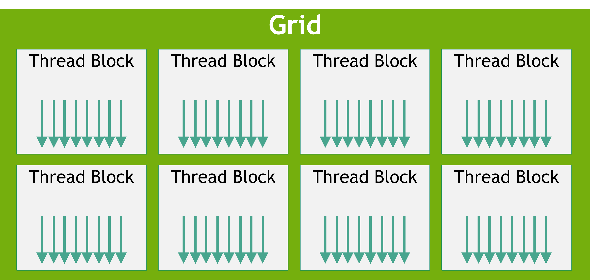

All in One View
Content from Using Markdown
Last updated on 2026-04-16 | Edit this page
Estimated time: 12 minutes
Overview
Questions
- How do you write a lesson using Markdown and sandpaper?
Objectives
- Explain how to use markdown with The Carpentries Workbench
- Demonstrate how to include pieces of code, figures, and nested challenge blocks
Introduction
This is a lesson created via The Carpentries Workbench. It is written in Pandoc-flavored Markdown for static files and R Markdown for dynamic files that can render code into output. Please refer to the Introduction to The Carpentries Workbench for full documentation.
What you need to know is that there are three sections required for a valid Carpentries lesson:
-
questionsare displayed at the beginning of the episode to prime the learner for the content. -
objectivesare the learning objectives for an episode displayed with the questions. -
keypointsare displayed at the end of the episode to reinforce the objectives.
Source: Nvidia on Youtube (https://web.archive.org/web/20241001024753/https://www.youtube.com/watch?v=-P28LKWTzrI)
Inline instructor notes can help inform instructors of timing challenges associated with the lessons. They appear in the “Instructor View”
Challenge 1: Can you do it?
What is the output of this command?
R
paste("This", "new", "lesson", "looks", "good")
OUTPUT
[1] "This new lesson looks good"Challenge 2: how do you nest solutions within challenge blocks?
You can add a line with at least three colons and a
solution tag.
Figures
You can use standard markdown for static figures with the following syntax:
{alt='alt text for accessibility purposes'}
Callout sections can highlight information.
They are sometimes used to emphasise particularly important points but are also used in some lessons to present “asides”: content that is not central to the narrative of the lesson, e.g. by providing the answer to a commonly-asked question.
Math
One of our episodes contains \(\LaTeX\) equations when describing how to create dynamic reports with {knitr}, so we now use mathjax to describe this:
$\alpha = \dfrac{1}{(1 - \beta)^2}$ becomes: \(\alpha = \dfrac{1}{(1 - \beta)^2}\)
Cool, right?
- Use
.mdfiles for episodes when you want static content - Use
.Rmdfiles for episodes when you need to generate output - Run
sandpaper::check_lesson()to identify any issues with your lesson - Run
sandpaper::build_lesson()to preview your lesson locally
Content from An introduction to parallelism
Last updated on 2026-04-16 | Edit this page
Overview
Questions
- What is parallelism?
- What factors should I consider before parallelising my code?
Objectives
- Understand the difference between task and data parallelism
- Know the dangers of parallelism
Serial programming
Serial programming is by far the simplest programming model and is the easiest to reason about.
Serial programming should always be preferred unless performance needs necessitate otherwise.
Task Parallelism
Task parallelism divides up the work into different types of jobs. Each task functions autonomously and relies on different communication methods between tasks to coordinate the work. Tasks in this model form a complex graph structure, with dependencies between nodes.
Example: If we consider the bike example, perhaps one person assembles frames, another constructs tyres and a third puts it all together. This is a bit like how a factory may be organised and is called pipelining.
Example: If the bikes were made to order. Perhaps each person builds each bike in its entirety, customised towards the order specification. Depending on the type of customisation, builds may take varying amounts of time. This is called a worker pool.
Task parallelism requires careful coordination between tasks:
- In pipelining, tasks may operate a different speeds. This means:
- Data must be passed between tasks in a way that clearly construes ownership: for example, there’s no point the assembler trying to install partially constructed tyres.
- Buffers or queues must be implemented between tasks to absorb the different rates of work
- If upstream queues are empty or downstream queues are full, tasks must be able to pause
- In worker pools, a system must be designed for optimally allocating and distributing work, as well as collecting the results in the end.
It is also common for pipelining and worker pools to be combined.
The coordination aspect of this model has proven in practice to be a common source of bugs. In response, a host of techniques have been developed to help mitigate, including:
- Synchronisation primitivies: semaphores, mutexes, locks, and conditions
- Atomic values
- Channels and pipes
- Software transactional memory
- Message passing interfaces (e.g. OpenMPI)
Data Parallelism
Data parallelism applies a computation to data by dividing up the data into small, independent chunks of work. Each thread, however, performs identical work.
Data parallelism is implmented in hardware on the CPU as “single instruction, multiple data” (SIMD) and on the GPU as “single instruction, multiple thread” (SIMT). The “single instruction” is key: the program instruction (perhaps an addition, or a multiplication) is broadcast across multiple pieces of data.
In both cases, the programming model is quite restrictive:
- The computation (or “kernel”) must be identical for each data input
- Communication between threads is very limited and, for the most part, each kernel must proceed independently
- Computation across each thread proceeds in lockstep: conditions or branches that result in divergence can be costly
Example: To return to the bike example, data parallelism would take as inputs all the bike parts, and each worker would assemble a bike in identical fashion at an identical pace. There would be no possibility for customisation.
GPUs are built around data parallelism and gain many of their speed advantages from the associated restrictive programming model.
The pitfalls of parallelism
For all the potential speed benefits that we gain from parallelism, it is important to be aware of a number of important downsides to parallelism.
- Performance overhead
- Race conditions
- More complex code
When considering moving code from serial to parallel, weigh up these costs to ensure
Performance overhead
Parallel code doesn’t come for free. In fact, sometimes throwing more threads at a problem can make things slower.
The types of overhead differ between CPU and GPU. When using CPU-backed threads, some of the costs include:
- Thread spawning: which involves creating a thread and allocating it some initial memory
- Context switching: when there are more threads than cores, the host OS will periodically suspend threads to “fairly” let each thread advance its work
- Communication overhead: all higher level communication methods are built on a toolbox of atomics, locks, semphores and condition variables and these have a non-neglible overhead
On the GPU the costs are different mostly owe to the fact that a CPU (the “host”) and the GPU (the “device”) are physically distinct. Some of these costs include:
- Memory transfers: GPUs have their own memory that is separate from the host and it takes time to transfer back and forth
- Command latency: telling the GPU what to do and transferring kernels has some associated latency
- Synchronisation and communication: a GPU has its own synchronisation primitives and a limited ability to communicate, both of which have a cost
When designing GPU code you must ensure that the computational benefits dwarf the associated costs of memory transfers and ensure your algorithm uses synchronisation sparingly.
In addition, your algorithm may also be slowed down by resource contention. This occurs when different threads all attempt to access a single resource of some kind, perhaps a file on disk, a network resource, or even to access memory. Slow downs due to resource contention can be non-linear.
Race conditions
With multiple threads operating at the same time, parallelism makes it difficult to order access to anything that might be shared: reading or writing to memory; printing to a terminal; accessing files; and so on. This is because threads make few guarantees about when they execute, and do not guarantee uninterrupted execution either.
In short, parallelism upsets the order of operations. And anything that relies on order must take explicit steps to enforce a desired ordering.
As an example, consider this parallel shift, where we want to move each item in an array down one element (and wrap around):
PYTHON
xs = [1, 2, 3, 4, 5]
for i in prange(len(xs)): # prange executes each iteration of the loop in parallel
x = xs[i]
xs[i - 1] = x # shift downThis is example of a race condition: the code implicitly expects all
threads to have read from xs before any thread then writes
to it. The problem is that there is no guarantee that these operations
will occur in lockstep across all the threads. One thread, for example,
might write to xs before other threads have even begun, or
vice versa.
Or consider a data parallel sum:
This is also subject to a data race. Even though the operation
x_sum += xs[i] looks like a single instruction, it
is in fact equivalent to x_sum = x_sum + xs[i]. In this
form you can see that the variable x_sum is first read, the
addition is computed, and result is written back. Once again, the race
is on to ensure that all threads read first before any writes occur, and
without some kind of synchronisation this is not guaranteed.
In later sections, we will discuss the kinds of available synchronisation techniques available to you.
Code complexity
Serial code is very easy to reason about: first this happens, then this, and finally that. Under the hood, the compiler may perform all sorts of optimisations (e.g. rearranging the order of instructions or pre-emptively executing a conditional branch) but it does this whilst guaranteeing that these are invisible within the thread.
Parallel code tends to be much more complex:
- Each thread is doing only part of the overall computation
- You can no longer guarantee the ordering of operations: threads may start, suspened, and stop at different times
- Compiler optimisations become visible between threads
- Significant programmer work is required to reason about and handle synchronisation
These complexities mean that bugs are more likely, and you must weigh this against the performance benefits you expect.
We recommend to always write your algorithm in a single threaded, serial form first, and use this to test your parallel code later.
Challenge
Run the following code: what do you expect and what do you get?
Can you rewrite the code without a race condition? Hint: use
numba.get_num_threads() and
numba.get_thread_id().
PYTHON
import numpy as np
from numba import njit, prange
@njit(parallel=True)
def psum(xs):
# We use an array of len=1 to avoid numba automatically
# fixing our race condition
x_sum = np.zeros(1)
for i in prange(len(xs)):
x_sum[0] += xs[i]
return x_sum[0]
xs = np.ones(1_000_000)
print("Sum:", psum(xs))PYTHON
import numpy as np
from numba import njit, prange, get_num_threads, get_thread_id
@njit(parallel=True)
def psum(xs):
# Give each thread a unique array index
x_sum = np.zeros(get_num_threads())
for i in prange(len(xs)):
x_sum[get_thread_id()] += xs[i]
# Finally sum the individual thread sums in the main thread
return x_sum.sum()
xs = np.ones(1_000_000)
print("Sum:", psum(xs))Content from A GPU Deep Dive
Last updated on 2026-05-05 | Edit this page
Overview
Questions
- What is a GPU?
Objectives
- Understand a warp why multiples of 32 (or 64) threads is important
- Understand the hierarchy of GPU memory
A little history
Grahics Processing Units (GPUs) were originally built to offload 2D and 3D visualisation computation from the CPU onto a dedicated device. The nature of video processing workloads meant that GPUs were built to handle data parallel workloads from the start. As GPUs became increasingly sophisticated, especially with the advent of programmable shaders and floating point support, it became apparent that GPUs offered the potential to perform general purpose computation (GPGPU). By early as 2003 there were already papers demonstrating how GPU graphics primitives could be repurposed to perform linear algebra.
NVIDIA formalised this general purpose computing on its GPUs with its relase of the CUDA library in 2006. Much later in 2016, AMD released ROCm which provided a similar GPGPU interface to its own hardware. There are also open source APIs including OpenCL and Sycl, Microsoft’s OneAPI which claims to bridge a range of accelerators, as well as AMD’s cross-platform compatility layer known as HIP. Despite these offerings, there remains strong vendor lock-in and NVIDIA and its proprietary CUDA API remains dominant.
Today, GPUs have diverged somewhat in their design depending on whether they are destined to function as a true graphics processing device or as more general purpose compute accelerator. Increasingly, AI workloads are driving design decisions that might not be useful for (or even harm!) some scientific workloads.
The GPU
In most systems, the GPU is phsically distinct from the CPU. It has its own computing cores, its own memory, its own floating point units, its own controllers, and a host of other units. The CPU and the GPU communicate with each other across some kind serialisation link such as PCIe.

In the simplest terms, a GPU is two things:
- Compute, provided by streaming multiprocessors (SM)
- Memory (including DRAM (“global”), SRAM (“shared”), and numerous caches)
Processing model
- You compute is gridded into thread blocks.
- The GPU scheduler assigns each thread block to an SM when it has capacity
- The SM scheduler assigns a warp to a set of 8 cores when those cores become free
- Cores become free when: a warp has completed; or a warp “stalls”, meaning it is waiting for another unit within the SM such as the memory controller, the FPU, or the tensor core
- Each thread block typically has more threads than there are in one warp: this means it will execute as multiple warps
- Each SM typically has multiple thread blocks assigned to it at one time. Limits include: register space and shared memory space. If a kernel uses a large number of registers or shared memory, this can limit the number of thread blocks assigned at any one time to an SM; in turn this can mean the SM doesn’t have threads waiting to mask stalls.
Streaming multiprocessor
A streaming multiprocessor (SM) is a collection of cores that are grouped together and share some resources in common. Take for example the recent NVIDIA B200 GPU: this has 148 SM, and each SM has 128 cores.
GPU cores (sometimes called a ‘CUDA cores’, or ‘shader processors’) are like the cores on your CPU but differ in some important ways:
- They are individually slower. The B200, for example, has clock speeds of only 700 MHz. In highly parallelisable computations, thousands of slow cores tend to be faster than a handful of very fast cores.
- They are much simpler. This simplicity owes in part to the fact that GPUs assume they are always operating in a highly parallel configuration: if a core stalls (e.g. waiting for memory), the GPU assumes there is always another thread waiting to be assigned so that the core won’t sit idle. CPUs, on the other hand, are built assuming single-threaded operation, and so use a number of complex techniques to make a serial algorthim (partially) parallelisable at the instruction level (see e.g. out of order execution or branch prediction).
- They are physically smaller, mostly as a result of being slower and simpler.
- They don’t have their own register space. Registers are the small “scratch pad” of memory that is immediately accessible by a core. On a CPU, the register is attached to the core, with the downside that if a thread moves between cores it must also move the register memroy. On a GPU, the register space is shared amongst the SM, which makes it easy to suspend and resume threads with no overhead.
- They always run in SIMD/SIMT mode. Threads are grouped together into a batches of 32 (or 64 on AMD hardware) known as a warp and assigned to run in lockstep.
A SM has a number of resources shared amongst the cores. We’ve already seen that the reigster space is shared. In addition, it has a shared floating point unit (FPU) where, just like on the CPU, when floating point math needs to be performed, the work will be delegated to this shared unit. Unlike on CPUs, these FPUs also have specialised hardware for computing some more complex math functions, like exponents, logarithms and trigonometry. More modern GPUs also have tensor cores which are specialised for matrix operations.
You might ask, why have the streaming mutliprocessor at all? Why have this intermediary entity in the hierarchy between the GPU scheduler and the cores themselves? The answer: physical locality. A GPU is a physical device and distance matters. By grouping the cores and assigning each a set shared resources that reside nearby on the die, we can make their use cheaper and faster.
Understanding memory
Both a CPU and a GPU have different layers of memory.
You might already know that reading from disk is very slow compared to reading from memory. But “reading from memory” comes in many different flavours too.
For a CPU, the slowest form of memory is reading from system memory. So CPU’s have developed all sorts of tricks to “pre-fetch” memory onto caches stored within the CPU itself. These are separated by levels depending on how far away they are to CPU, the so-called L1, L2, and L3 caches. The CPU does this automatically, and CPU optimisation often involves aligning the CPU’s automatic prefetching with an algorithms memory needs.
With a GPU, there is a lot more manual memory management than you might be used to.
In the first instance, you need to transfer memory from the CPU to the GPU’s DRAM or “global” memory. Normally, the GPU can’t “see” memory that is stored on the host. This is a particularly slow operation and it is important to design algorithms that minimise host to device (or device to host) transfers.
But DRAM is still very slow. The GPU has a number of automatic caches designed to make the DRAM faster. The Level 2 cache is a shared by the whole GPU and the faster L1 cache is shared by each SM.
In addition, each SM has its own “shared” memory. This shared memory can be manually managed by the programmer and should be used where automatic caching is not sufficient.
Finally, there is also the register space.
All three of the registers, the shared memory and the L1 cache compete for space on a single physical piece of SRAM memory.
Multiple axes: total space; latency; lifetime; visibility. Global memroy is large, slow, outlives the kernel, and is visible by all threads. Shared memory is faster, much smaller, and exists only for as long as each thread block is alive; and is visible only from its respective thread block. Local memory is smaller again, exists for only the lifetime of a single thread, and is visible only by that thread.
Some confusing terms
When you start writing your own kernels, you will need to describe how to parallelise those kernels over your data. This is done by configuring a grid which is itself composed of a configurable number of threads. For example, if you are adding two vectors together, you might create as many threads as there are elements of the vectors.
CUDA adds a complication: threads are grouped together into thread blocks, and all thread blocks must have the same number of threads.

It can be easy to conflate this software hierarchy (thread blocks) with the hardware hierarchy (SMs, cores). They are separate. programming model of grid/thread blocks/threads maps onto the physical hardware in the following way:
- The thread blocks are collected and readied to be worked on
- When a SM has capacity, a new thread block will be allocated to it.
- Multiple thread blocks can be in progress at one time on each SM (cf. latency hiding)
- The actual work done as a wap
You might want to bookmark this section for later once we describe launching your own kernels. It is very easy to confuse the software and hardware hierarchies.
Content from CuPy: A Numpy-like GPU experience
Last updated on 2026-04-21 | Edit this page
Overview
Questions
- What is a GPU?
Objectives
- Understand a warp why multiples of 32 (or 64) threads is important
- Understand the hierarchy of GPU memory
CuPy as a drop-in replacement for Numpy
Numpy’s innovation has been to make
high-performance array
programming easily accessible from within Python. It has done this
thanks to its multidimensional ndarray type which can be
manipulated using scalar and elementwise operators, a range of
mathematical functions, and very flexible broadcasting rules.
CuPy is the GPU equivalent to Numpy, and likewise it is based on its
own ndarray type that lives on the GPU. If you are
comforable with numpy, CuPy should feel very familiar. Before attempting
more advanced GPU programming techniques, CuPy should be your first port
of call.
CPU arrays versus GPU arrays
Numpy’s and CuPy’s arrays are both multidimensional arrays, and they both expose similar APIs.
They differ in where they reside. The CPU (host) and the GPU (device) each have their own independent memory, which is something we will cover in much more detail later. Objects stored in host memory can’t be “seen” by the GPU without first transferring the data across to the device, and vice versa.
Numpy arrays exist in host memory and CuPy arrays exist on the GPU. To perform operations involving multiple arrays you must ensure that each array is within the same portion of memory: if all the arrays are on the host, the computation will be performed by the CPU; if they are all on the device, the computation will be peformed by the GPU.
It’s up to you to handle transferring arrays back and forth between the host and device.
In Numpy we can create a numerical array from a range of
iterables:
PYTHON
import numpy as np
arr1 = np.array([1, 2, 3, 4, 5]). # from a list
arr2 = np.array(range(1, 1000, step=2)) # from a range
arr3 = np.array([x**2 for x in range(1, 100)]) # from a list comprehensionThese arrays all reside in host (CPU) memory.
To create a CuPy GPU array we can do something very similar and
merely need to swap out np for cupy:
PYTHON
import cupy
import numpy as np
arr1_d = cupy.array([1, 2, 3, 4, 5]) # from a list
arr2_d = cupy.array(range(1, 1000, step=2)) # from a range
arr3_d = cupy.array([x**2 for x in range(1, 100)]) # from a list comprehension
# Or transfer across an existing numpy array:
arr4 = np.random.normal(shape=1_000_000)
arr4_d = cupy.array(arr4) # this is a copy!
# And to return back to the host:
arr3 = cupy.asnumpy(arr3_d)Note the convention of appending _d to the names of
arrays that are on the GPU device. This is purely
convention but, in the absence of types, this can help you keep track of
where an array is located.
(There’s also cupy.asarray(otherarray): this will create
a GPU array only if otherarray isn’t already on
the GPU device. It’s handy function to ensure an array is on the GPU but
will avoid a copy if it isn’t needed.)
An aside: on benchmarking
Python’s timeit
In Python, the easiest way to benchmark some code is to use the
built-in module timeit.
For example:
PYTHON
import timeit
import numpy as np
a = np.random.normal(size=100_000_000)
b = np.random.normal(size=100_000_000)
def my_computation(a, b):
a += b
timer = timeit.Timer(lambda: my_computation(a, b))
# Call `do_some_work()` just once, and repeat this 10 times
elapsed_times = timer.repeat(repeat=10, number=1)
print(min(elapsed_times))The first argument to Timer() must be a callable that
takes no arguments; we use a lambda function to capture and pass in the
arguments. The method repeat() will return a set of times
for each iteration. In most cases, you want to take the minimum
value from these repeats.
Now we can try running this same code on the GPU using CuPy:
PYTHON
import timeit
import cupy
a = cupy.random.normal(size=100_000_000)
b = cupy.random.normal(size=100_000_000)
def my_computation(a, b):
a += b
timer = timeit.Timer(lambda: my_computation(a, b))
# Call `do_some_work()` just once, and repeat this 10 times
elapsed_times = timer.repeat(repeat=10, number=1)
print(min(elapsed_times))Notice all we did to run this on the GPU was to swap the
np namespace calls to cupy.
The time looks great. On my machine, the Numpy computation takes 0.44 ms whilst the CuPy takes 0.005 ms.
But there’s a problem with this benchmarking. The CuPy code is being executed asynchronously: we are sending the computation to the GPU and then immediately continuing without waiting for the result. Since the CPU and the GPU are separate devices this is a great way to keep sending work across to the GPU, but it hides the true time of the computation.
One solution here is to force the code to behave synchronously. And we can do that by manually inserting a synchronisation call at the tail of our computation function:
PYTHON
def my_computation(a, b):
a += b
# Wait here until the GPU is finished
cupy.cuda.get_current_stream().synchronize()Now if we measure the timings, the CuPy version on my machine takes 1.8 ms. That’s still a great time but its 3 orders of magnitude slower than we first reported!
Using cupyx.benchmark()
Another way to avoid these issues is to use the benchmarking function provided by CuPy:
PYTHON
import cupy
import cupyx
a = cupy.random.normal(size=100_000_000)
b = cupy.random.normal(size=100_000_000)
def my_computation(a, b):
a += b
results = cupyx.profiler.benchmark(lambda: my_computation(a, b), n_repeat=10)
print(results)This function inserts event timers onto the GPU device and is able to measure two different times: the CPU time and the GPU time. If you run this, you’ll notice that the CPU time is much less than the GPU time, since the asynchronous computation returned control to the CPU almost immediately, whilst the GPU continued to execute in the background.
For me, benchmarking shows 0.008 ms recorded by the CPU, and 1.7 ms on the GPU — both very similar to what we measured earlier before and after we added the explicit synchronisation.
Challenge
Modify the previous benchmark in the following way:
- Create the vectors
aandbas numpy arrays first. - Transfer these to GPU arrays inside the
my_computationfunction.
How does this affect the benchmark? Why?
PYTHON
import cupy
import cupyx
import numpy as np
a = np.random.normal(size=100_000_000)
b = np.random.normal(size=100_000_000)
def my_computation(a, b):
a_d = cupy.array(a)
b_d = cupy.array(b)
a_d += b_d
results = cupyx.profiler.benchmark(lambda: my_computation(a, b), n_repeat=10)
print(results)The benchmark is significantly longer in this version due to the time taken for memory to be copied from host to device.
This is an important consideration to make in all your work with GPUs: even if the computation itself is faster, you must be careful that setup costs like memory transfers don’t eclipse you’re savings.
Numpy-style computation
Addition, subtraction, trignometric functions and so: these all work just as they with Numpy.
Let’s consider computing the Taylor expansion the exponential function. Recall that this is: \(e^x = \sum_n \frac{x^n}{x!}\). In numpy would could compute this expansion as:
PYTHON
import math
import numpy as np
def exp(xs, ys, degree=12):
for n in range(degree):
ys += xs**n / math.factorial(n)
xs = np.random.uniform(-1, 1, size=1_000_000)
ys = np.zeros_like(xs)
np.testing.assert_allclose(exp(xs, ys), np.exp(xs))We can ensure these computations occur on the GPU simply by swapping in GPU arrays:
PYTHON
import math
import cupy
def exp(xs, ys, degree=12):
for n in range(degree):
ys += xs**n / math.factorial(n)
xs = cupy.random.uniform(-1, 1, size=1_000_000)
ys = cupy.zeros_like(xs)
cupy.testing.assert_allclose(exp(xs, ys), cupy.exp(xs))To have this compute on the GPU we did just two things:
- We ensured arrays were created (or transferred to) the GPU.
- We swapped out
npmodule prefixes forcupy, e.g. by callingcupy.exp().
The nitty gritty of how CuPy compiles this to GPU code and the way in which it chooses to parallelise the code is out of our hands. In return, we get operations that are no more complicated than Numpy.
Fusing operations
Just like numpy, a series of array operations are applied to CuPy arrays sequentially. This means that each operator (e.g. an addition, a scaler multiplication, perhaps a trigonometric function) is applied as a separate kernel, which must in turn read and write through the entirety of the arrays each time. This kernel dispatch overhead and the associated memory churn can be a considerable performance penalty.
CuPy offers the (experimental) ability to fuse simple
operators into a single operation by using the function decorator
@cupy.fuse. In practice this means the operators are
applied as a single kernel and in a single pass of the array
Try running the following on your own machine and see how the speed compares to the non-fused example:
PYTHON
import math
import cupy
import cupyx
@cupy.fuse
def exp_fused(xs, ys, degree=12):
for n in range(degree):
ys += xs**n / math.factorial(n)
xs = cupy.random.uniform(-1, 1, size=1000)
ys = cupy.zeros_like(xs)
cupy.testing.assert_allclose(exp_fused(xs, ys), cupy.exp(xs))
print(cupyx.profiler.benchmark(lambda: exp_fused(xs, ys), n_repeat=100))On my machine I see an approximately 15x speed improvement. The fusing decorator is experiemental and works best when the contents of the function are purely elementwise. Operations like array allocations, certain types of broadcasting, or sums may break or not cause the speedup you’d expect and are best omitted from the fused function. As always, test and benchmark your code.
Broadcasting
Most complex computation will rely on Numpy’s broadcasting rules. Broadcasting rules control how array dimensions are matched, with special rules that apply to dimensions having a length of 1. We are going to assume you are already familiar with these rules and work through a couple of examples that demonstrate the flexibility of CuPy.
Example: Matrix multuplication
Consider the multiplication of two matrices: \(A\) (sized \(m \times n\)) and \(B\) (sized \(n \times p\)). Their product \(C\) is a \(m \times p\) matrix having elements \(c_{ij} = \sum_{k=1}^n a_{ik} b_{kj}\).
We can write this by broadcasting multiplication over \(A\) and \(B\) so as to produce as \(m \times n \times p\) 3-dimensional array, followed by a sum over the second dimension. (Pause and check this is true).
PYTHON
def matmul(A, B):
# Matrix multiplication using broadcasting
return (A[:, :, None] * B[None, :, :]).sum(axis=1)Challenge
Benchmark the matmul() function on both the CPU and GPU
using input matrices with dimensions 100 \(\times\) 1000 and 1000 \(\times\) 100. You will need to create input
matrices that reside both on the host and the GPU and set up the
benchmarking functions.
Bonus question: can you spot the danger of using this broadcasting algorithm for matrix multiplication? Hint: what happens if the matrices get larger?
Example: Discrete Fourier transform
The discrete Fourier transform is defined as:
\(X_k = \sum_n^N x_n e^{-2 i \pi \frac{k n}{N}}\)
We can write this as a broadcasting operation across 2 dimensions (k by n), followed by a sum along the second dimension:
PYTHON
def DFT(xs):
# This function returns either np or cupy module depending on array type
# which lets us write device-agnostic code.
xp = cupy.get_array_module(xs)
N = len(xs)
ks = xp.arange(0, N)
ns = xp.arange(0, N)
phases = ks[:, None] * ns[None, :] / N
return xp.sum(
xs[None, :] * xp.exp(-2j * np.pi * phases),
axis=1
)This is a function with elementwise multiplication, complex exponentiation, scalar multiplication and summation. When our inputs are GPU arrays it happens entirely on the GPU.
Also take note of the function
cupy.get_array_module(arr): this is a useful helper
function to write device-agnostic code.
Challenge
- Benchmark this code on both the CPU and GPU using a 1D input with
normally distributed real and imaginary components:
xs = np.random.normal(size=1000) + 1j * np.random.normal(size=1000) - Rewrite the code by extracting the elementwise component of the
calculation into its own helper function and using the decorator
@cupy.fuse. Does this speed up the computation? (Hint: you might need to experiment with a few different options.)
Since @cupy.fuse does a fair bit of black magic, it
takes some experimentation to find the right subset of instructions to
attempt to fuse. I found that any broadcast operations that resulted in
“stretched” dimensions resulted in an overall slowdown of the code.
The following resulted in a moderate speed increase:
PYTHON
@cupy.fuse
def _DFT_fused(kns, N):
return cupy.exp(-2j * np.pi * kns / N)
def DFT_fused(xs):
N = len(xs)
ks = cupy.arange(0, N)
ns = cupy.arange(0, N)
# This broadcast operation results in a "stretch" of the dimensions
kns = ks[:, None] * ns[None, :]
# The sum is a reduction operation that shouldn't be fused
return cupy.sum(xs[None, :] * _DFT_fused(kns, N), axis=1)Linear Algebra
CUDA includes an extensive linear algebra library that is highly
optimised, and CuPy’s linalg routines provide an accessible
interface to this library. If you can rewrite your problem succinctly as
a series of linear algebra operations this will almost always be faster
than a custom kernel.
Consider the example of a large matrix multiplication on both CPU and GPU:
PYTHON
import numpy as np
import cupy
import cupyx
A = np.random.normal(size=(10_000, 10_000))
B = np.random.normal(size=(10_000, 10_000))
A_d = cupy.array(A)
B_d = cupy.array(B)
print(
cupyx.profiler.benchmark(lambda: A @ B, n_repeat=10)
)
print(
cupyx.profiler.benchmark(lambda: A_d @ B_d, n_repeat=10)
)Note that here we’ve used the matrix multiplication operator,
@, which is shorthand for either
np.linalg.matmul or cupy.linalg.matmul
depending on the array type.
The speed-up is huge: on my own hardware, we observe 16.6 s versus just 107 ms.
Similarly, we can perform matrix inversion or decomposition just as we would using numpy:
PYTHON
import cupy
# Let's solve for x in: Ax = y
A = cupy.random.normal(size=(1000, 1000))
y = cupy.random.normal(size=1000)
Ainv = cupy.linalg.inv(A)
x0 = Ainv @ y
# solve() uses a decomposition algorithm that is more
# numerically stable than the inverse matrix
x1 = cupy.linalg.solve(A, y)
# Check that both methods return that same solution
cupy.testing.assert_allclose(x0, x1)
# Perform QR decomposition
Q, R = cupy.linalg.qr(A)There’s also the einsum() method which is not a linear
algebra method but which is very powerful if you can write your
equations using Einstein
notation, e.g.:
PYTHON
import cupy
A = cupy.random.normal(size=(1000, 10_000))
B = cupy.random.normal(size=(10_000, 1000))
# Einstein notation for matrix multiplication
C = cupy.einsum("ij, jk -> ik", A, B)
cupy.testing.assert_allclose(C, A @ B)Challenge
Compute the outer product of
two large vectors, x and y, using both CuPy
built-in cupy.outer routine and using
einsum(). Check that the different methods give the same
result.
FFT
The Fourier transform is a staple of signal processing, and the fast Fourier transform (FFT) algorithm is already a massive improvement on the naive sum.
CUDA provides highly optimised libraries for performing FFTs and CuPy provides a high level wrapper that mirrors the numpy routines. In addition, it also exposes some lower-level routines that might be essential to getting good performance.
In numpy, for example, we can do the following FFT:
PYTHON
import numpy as np
# Create a complex valued 4 x 1024 x 1024 array where real
# and imaginary components are both normally distributed
a = np.random.normal(size=(4, 1024, 1024)) + 1j * np.random.normal(size=(4, 1024, 1024))
# Perform a 2D fft for each of the 4 1024 x 1024 matrices
A = np.fft.fftn(a, axes=(1, 2))Performing this on the GPU involves the same steps as before: ensure the arrays reside in GPU memory and replace numpy with CuPY prefixed methods:
PYTHON
import cupy
# Create a complex valued 4 x 1024 x 1024 array where real
# and imaginary components are both normally distributed
a = cupy.random.normal(size=(4, 1024, 1024)) + 1j * cupy.random.normal(size=(4, 1024, 1024))
# Perform a 2D fft for each of the 4 1024 x 1024 matrices
A = cupy.fft.fftn(a, axes=(1, 2))Try benchmarking the results: is it faster?
When you run a FFT the CUDA library actually does two things:
- It creates a plan: depending on your input data, the axes you care about, etc. it needs to work out how best to do this. This will almost always involve reserving some memory to use as a working space.
- It then executes a plan.
If you’re executing the same FFT multiple times you might want to save on the overhead of creating the plan. CuPy lets you do this:
PYTHON
import cupy
import cupyx
# Create a complex valued 4 x 1024 x 1024 array where real
# and imaginary components are both normally distributed
a = cupy.random.normal(size=(4, 1024, 1024)) + 1j * cupy.random.normal(size=(4, 1024, 1024))
# Create a plan
plan = cupyx.scipy.fft.get_fft_plan(a, axes=(1, 2))
# Plan acts as a context manager
with plan:
A = cupy.fft.fftn(a, axes=(1, 2))(Although in my testing, this doesn’t provide a speed-up, and possibly isn’t working as expected in the current versions.)
Content from Writing your first GPU kernels
Last updated on 2026-05-05 | Edit this page
Overview
Questions
- What is a GPU?
Objectives
- Understand a warp why multiples of 32 (or 64) threads is important
- Understand the hierarchy of GPU memory
There are a few options for writing kernels in Python, however in this workshop we will prefer to use Numba. The reason for this is simple: Numba lets you write GPU kernels in (a limited subset of) Python. You will be able to draw on your existing knowledge of Python, and your existing tools, linters and syntax highlighting will all continue to work.
CuPy also makes it possible to write kernels, however the kernels are written in C and stored as text strings inside your python code; this means you must not only be proficient in C but you will also lose the syntax highlighting of your editor.
Whatever you choose, besides some syntactical differences, the concepts learned here translate one-to-one to kernels written directly in C or C++.
What is a kernel?
Let’s return to the example of adding two vectors elementwise. As a simple loop this looks like:
PYTHON
import numpy as np
def adder(xs, ys):
zs = np.empty_like(xs)
for i in range(len(xs)):
zs[i] = xs[i] + ys[i]
xs = np.random.normal(size=1000)
ys = np.random.normal(size=1000)
adder(xs, ys)This is an ideal candidate for data parallelism, since each iteration of the loop is indepedent.
In a parallel context, the interior of the loop is referred to as a
kernel. The kernel is a function that is called repeatedly and
identically for each parallel iteration. A kernel depends on one key bit
of information: the index i. This index tells the kernel
“where” it is, and in this case which part of the input and output
vectors are its concern.
For clarity, let’s rewrite this as a parallel loop and with the kernel as a stand alone function:
PYTHON
from numba import njit, prange
import numpy as np
@njit
def kernel(i, xs, ys, zs):
zs[i] = xs[i] + ys[i]
@njit(parallel=True)
def adder(xs, ys, zs):
for i in prange(len(xs)):
kernel(i, xs, ys, zs)
N = 1000
xs = np.random.normal(size=N)
ys = np.random.normal(size=N)
zs = np.empty_like(xs)
adder(xs, ys)In GPU programming, your work will be all about writing the kernel itself. The outer loop, on the other hand, is something that the GPU will manage for you. It is up to the GPU to decide how to parallelise that loop, when to run the kernels, and the order they execute in.
A first kernel
Let’s try writing this adder function as a kernel on the GPU.
PYTHON
import math
import cupy
from numba import cuda
@cuda.jit
def adder_gpu(xs, ys, zs):
i = cuda.grid(1)
if i < len(xs):
zs[i] = xs[i] + ys[i]
N = 1000
xs_d = cupy.random.normal(size=1000)
ys_d = cupy.random.normal(size=1000)
zs_d = cupy.empty_like(xs_d)
nthreads = 256
nblocks = math.ceil(N / nthreads)
adder_gpu[nblocks, nthreads](xs_d, ys_d, zs_d)There’s a lot to unpack in this brief snippet of code:
- First, we added a new import:
numba.cuda. -
We’ve wrapped our kernel with the decorator
@cuda.jit. Just likenumba.jit, this will allow the kernel to compile “just in time” (jit) when we call it based on the input types (e.g. the types ofxs,ys, andzs). There is an overhead associated with this initial compilation but subsequent calls will re-use the cached kernel so long as the input types remain unchanged. -
We’ve called
cuda.grid(1)to determine the index of the kernel. Unlike our previous example, the index is not passed in as an argument. We’ve also added a condition to check the index is within range. -
We’ve allocated our GPU kernels using
CuPy.array(). CuPy GPU arrays are compatible withnumba.cudakernels. Numba provides its own methods too, such ascuda.device_array(),cuda.to_device()andarray_d.copy_to_host(), and you might want to use these instead if you don’t want CuPy as a dependency in your project. -
We’ve called the
add()function by first providing grid dimensions: blocks and threads per block. Grid dimensions configure how many times the kernel is run and are directly related to the kernel’s index. Each time you call a GPU kernel, you must configure its grid dimensions. We will discuss grid configuration in depth shortly. - All array and memory allocations occur outside of the kernel. The kernel cannot allocate global memory and so these arrays must be passed as arguments.
-
The kernel does not return anything (or implicitly, returns
None). Kernels do not return values, and their “outputs” must
be provided as a mutable input. In this case, the output is
zswhich must be allocated outside the kernel and passed as an argument to the kernel.
Challenge
Try benchmarking the each of the parallel CPU and GPU adder functions. Which is faster? Try making N larger: is there a point where their respective speeds swaps?
PYTHON
import math
import cupy
import cupyx
import numpy as np
from numba import cuda, prange, njit
@njit
def kernel(i, xs, ys, zs):
zs[i] = xs[i] + ys[i]
@njit(parallel=True)
def adder(xs, ys, zs):
for i in prange(len(xs)):
kernel(i, xs, ys, zs)
@cuda.jit
def adder_gpu(xs, ys, zs):
i = cuda.grid(1)
if i < len(xs):
zs[i] = xs[i] + ys[i]
N = 12_000_000
xs = np.random.normal(size=N)
ys = np.random.normal(size=N)
zs = np.empty_like(xs)
xs_d = cupy.array(xs)
ys_d = cupy.array(ys)
zs_d = cupy.empty_like(xs_d)
result = cupyx.profiler.benchmark(lambda: adder(xs, ys, zs), n_repeat=100)
print(result)
nthreads = 256
nblocks = math.ceil(N / nthreads)
result = cupyx.profiler.benchmark(lambda: adder_gpu[nblocks, nthreads](xs_d, ys_d, zs_d), n_repeat=100)
print(result)On my machine, the CPU remains faster for all workloads where N < 10,000,000 values. At around about 12,000,000 values, the CPU version begins to rapidly increase in duration and to be less performant than the GPU.
(Bonus question: why do you think the CPU version suddenly reaches a performance cliff?)
Grid dimensions
Recall that the GPU is responsible for managing the parallelisation of our kernels. It’s up to us, however, to configure how that parallelisation occurs and in the CUDA model this occurs by setting the grid dimensions.
A grid is composed of one or more thread blocks, each with a fixed number of threads. The total number of threads in a grid is the number of thread blocks multiplied by the number of threads.
When a kernel is run, the work is distributed in the following manner:
- The GPU scheduler parcels off thread blocks, and enqueues it to each streaming multiprocessor (SM) as it has some availability.
- Each SM is then, in turn, responsible for scheduling the thread block to run as a series of warps (32 or 64 threads that run in lockstep) as soon as it has idle cores.
Pictorially, this looks something like this:
![]episodes/fig/gpu-scheduling.png)
You might wonder at this point: threads make sense as they’re the fundamental unit of parallelisation, but why do I need to group them into blocks? And the answer is linked to the hardware design of the GPU. Inter-thread coordination, synchronisation and communication can only occur within a SM, which in turn means only within a thread block. So far we’ve seen kernel examples that don’t require these facilities, but many workloads (and optimisations) need inter-thread coordination or communication.
There’s a few things to factor in when choosing a grid size:
- Ideally, choose the number of threads per block to be a multiple of your warp size. This means mulitples of 32 threads for NVIDIA hardware and 64 for AMD. Remember that theads are executed in lockstep as a warp; if its not a round multiple, any excess cores will nonetheless be enrolled in the warp with their result ignored.
- Don’t make the threads per block too large. You want to strike a balance where you have a lot of blocks so that each SM has a queue of work that it can cycle through as its cores become idle; at the same time you want to ensure the blocks are large enough to mitigate overheads from block scheduling.
- Rarely will a grid size match the problem size. Whilst your threads per block must be a multiple of 32, we wouldn’t expect your data to also also be an even multiple. When sizing your grid, you’ll need to ensure your kernel includes a condition that checks that its index lies within the data.
A good rule of thumb for threads per block is somewhere between 128 to 1024 threads. As always benchmark your code.
You grid can 1, 2 or 3 dimensional. As an example, if we were adding two large matrices we might choose to index by row and column. In this case our code might look like:
PYTHON
@cuda.jit
def add(xs, ys, zs):
i, j = cuda.grid(2) # The argument to grid determimines the dimension of the grid
if i < xs.shape[0] and j < xs.shape[1]:
zs[i, j] = xs[i, j] + ys[i, j]
xs = cupy.random.normal(size=(8192, 8192))
ys = cupy.random.normal(size=(8192, 8192))
zs = cupy.empty_like(xs)
add[(256, 256), (32, 32)](xs, ys, zs)In practice, it is more common to a one dimensional index.
In actual fact, cuda.grid() and its sibling
cuda.gridsize() (which returns the total number of threads
across the grid) are helper functions. They wraps the more primitive
variables:
-
cuda.threadIdx.x: the thread index within the thread block -
cuda.blockDim.x: the number of threads per block -
cuda.blockIdx.x: the block index within the grid -
cuda.gridDim.x: the number of blocks in the grid
(For multidimensional grids, the additional indices are available at
.y and .z,
e.g. cuda.threadIdx.y.)
Based on this, we can write our own versions of the helper functions:
-
cuda.grid(1)is equivalent tocuda.blockIdx.x * cuda.blockDim.x + cuda.threadIdx.x -
cuda.gridsize(1)is equivalent tocuda.blockDim.x * cuda.gridDim.x
You should be comfortable with both versions as you’ll see them used interchangably. Additionally, the extra information about where a thread lies within its block will prove useful in later kernels.
Challenge
Return to add_gpu and modify the code so that it ensures
the full arrays are added irrespective of the grid size. That is, ensure
the each element is added whether the grid is sized too small or too
large.
Hint: try replacing the if condition with a
for loop having a step size given by
cuda.gridsize(1).
With the new configuration try modifying the thread and block count:
- What happens to the performance if you set the thread blocks to 1 and threads per block to 256? Why?
- What happens if you set
nthreadsvery large, perhaps to 4096?
Using a for loop like this is a very common idiom in kernel design. As before, it ensures we stay within the bounds of the array, but it doesn’t rely on the grid being properly sized. Later, you’ll see it lends itself to other common optimisations.
When the block size it set to 1, the GPU is able to utilise only one of its SMs. The rest will sit idle, resulting in very poor utilisation of the GPU, also known as occupancy.
When the thread size is too large, your kernel may crash. When especially large, the kernel may exceed the shared resources of the SM, for example its register space. It’s rare that thread counts greater than 1024 are useful or performant.
Challenge
Rewrite the adder kernel using the underlying thread and block
indices directly, instead of grid() and
gridsize.
An aside: warp divergence
We’ve talked earlier about how a warp executes its threads in
lockstep. But in the previous examples we included the condition
cuda.grid(1) < len(xs). How can a SIMT execution model
handle a condition?
When a warp encounters a condition, it will first evaluate the condition. Then:
- If the condition evaluates identically across the warp (e.g. each thread evaluates to true), then the warp will continue executing the one conditional branch.
- On the other hand, if threads evaluate differently across the warp then we get warp divergence. In this case, the warp must evaluate both branches of the condition, and due to the lockstep nature of SIMT, it will do this sequentially: first one branch, and then the other. Each thread that is not part of the current conditional branch will be masked, essentially performing a “no-op” for eachof their respective processor cycles.
Warp divergence is expensive since it wastes processor cycles. You will want to ensure warp divergence occurs in as few warps as possible, and this plays a factor in both kernel design and grid configuration.
In the previous adder kernel, you will notice warp
divergence occurs in exactly one warp: the warp whose index range
breaches the length of the underlying arrays.
Mutliplier
Challenge
With just minor modifications, change the 1D adder
kernel to a mutliplier kernel that computes elementwise
multiplication. e.g. \(z_i = x_i \times
y_i\).
Add a test to ensure correctness.
PYTHON
import math
import cupy
from numba import cuda
@cuda.jit
def multiplier(xs, ys, zs):
# TODO
N = 12_000_000
xs_d = cupy.random.normal(size=N)
ys_d = cupy.random.normal(size=N)
zs_d = cupy.empty_like(xs_d)
# TODO:
# 1. Configure the thread and block count
# 2. Call the kernel
# 3. Test output using cupy.testing.assert_allclose()PYTHON
import math
import cupy
from numba import cuda
@cuda.jit
def multiplier(xs, ys, zs):
i = cuda.grid(1)
zs[i] = xs[i] * ys[i]
N = 12_000_000
xs_d = cupy.random.normal(size=N)
ys_d = cupy.random.normal(size=N)
zs_d = cupy.empty_like(xs_d)
nthreads = 256
nblocks = math.ceil(N / nthreads)
multiplier[nblocks, nthreads](xs_d, ys_d, zs_d)
cupy.testing.assert_allclose(zs_d, xs_d * ys_d)Matrix multiplication
Let’s attempt to write our own kernel that performs matrix multiplication. Recall that if \(A\) is an \(m \times n\) matrix, and \(B\) a \(n \times p\) matrix, then their product is a \(m \times p\) matrix \(C\) having elements \(c_{ij} = \sum_{k=1}^n a_{ik} b_{kj}\).
Let’s begin by first writing this in simple Python as a series of for loops:
PYTHON
import numpy as np
def matmul(A, B, C):
for i in range(C.shape[0]):
for j in range(C.shape[1]):
for k in range(A.shape[1]):
C[i, j] += A[i, k] * B[k, j]
A = np.random.normal(size=(32, 16))
B = np.random.normal(size=(16, 24))
C = np.zeros((32, 24))
matmul(A, B, C)
np.testing.assert_allclose(C, A @ B)When considering how to design a kernel for this problem, we need to answer a few interrelated questions:
- What is a unit of parallelisation? Or put differently, what does the index of each kernel map to in our problem domain? Is it an element in one (or both) of the input matrices? Is it an element of the output matrix? Is it a row or column?
- How should we configure our grid? What is the span of the grid and what is its dimension?
Challenge
Consider the following three different variants of kernels and associated grid configurations. What is the preferred choice and why?
Option 1:
PYTHON
# Grid: 3D grid over all values of i, j, k
def kernel1(i, j, k, A, B , C):
C[i, j] += A[i, k] * B[k, j]
# Grid: 2D grid over all values of i, j
def kernel2(i, j, A, B, C):
for k in range(A.shape[1]):
C[i, j] += A[i, k] * B[k, j]
# Grid: 2D grid over all values of i, k
def kernel3(i, k, A, B, C):
for j in range(C.shape[1]):
C[i, j] += A[i, k] * B[k, j]
# Grid: 1D grid over all values of i
def kernel3(i, A, B, C):
for j in range(C.shape[1]):
for k in range(A.shape[1]):
C[i, j] += A[i, k] * B[k, j]Two considerations stand out when comparing the kernel options:
-
Race conditions: Recall that reading, computing,
and writing to memory in parallel code does not happen all at once, and
multiple threads competing to do this to the same memory
location will introduce race conditions. Kernels 1 and 3
both introduce kernels with race conditions. In kenrel 1, for each
i,jcoordindate there will bekcompeting kernels. The situation is similar for kernel 3. There are (complex) ways to mitigate these race conditions but we would have to be justified in taking this route. - Maximal parallisation: All things being equal, we would typically want to maximise the degree of parallelisation and fan out the work across the many thousands of cores of the GPU. Kernel 1 has \(i \times j \times k\) threads which, if it didn’t suffer from race conditions, would be ideal. In constrast, kernel 3 parallelises only over the \(i\) rows of \(A\) and for most sizes of matrices even with thousands of rows, this will poorly utilise the GPU (also known as poor occupancy). Kernel 2, on the other hand, has \(i \times j\) threads, which even for kernels with dimensions of only a few hundred rows and columns results in tens of thousands of threads.
On these grounds, kernel 2 is the preferred option with a 2D grid configuration that spans \(i \times j\).
Challenge
Have a go at filling in the missing lines from within the kernel definition and grid configuration.
PYTHON
import cupy
from numba import cuda
@cuda.jit
def matmul(A, B, C):
i, j = cuda.grid(2)
if i < C.shape[0] and j < C.shape[1]:
# TODO
A = cupy.random.normal(size=(100, 200))
B = cupy.random.normal(size=(200, 150))
C = cupy.zeros((100, 150))
threads = 16
nblockx = math.ceil( #TODO )
nblocky = math.ceil( #TODO )
matmul[(nblockx, nblocky), (threads, threads)](A, B, C)
cupy.testing.assert_allclose(C, A @ B)One solution looks like this:
PYTHON
@cuda.jit
def matmul(A, B, C):
i, j = cuda.grid(2)
if i < C.shape[0] and j < C.shape[1]:
for k in range(A.shape[1]):
C[i, j] += A[i, k] * B[k, j]And with the following grid configuration:
PYTHON
threads = 16
nblockx = math.ceil(C.size[0] / threads)
nblocky = math.ceil(C.size[1] / threads)
matmul[(nblockx, nblocky), (threads, threads)](A, B, C)An alternative is to store the partial sum in a local
variable before writing out to the global memory location at
C[i, j]. For example:
PYTHON
@cuda.jit
def matmul(A, B, C):
i, j = cuda.grid(2)
if i < C.shape[0] and j < C.shape[1]:
cij = 0
for k in range(A.shape[1]):
cij += A[i, k] * B[k, j]
C[i, j] = cijTry benchmarking these two versions. Which is faster? Can you guess why?
Challenge
Rewrite the matrix multiplication using a 1D grid. Under this
configuration, every kernel is still responsible for a single element of
\(C\) but it must map from a 1D index
to a 2D index. What is the span of the 1D grid? Hint: familiarise
yourself with the Python function divmod().
PYTHON
import math
import cupy
from numba import cuda
@cuda.jit
def matmul(A, B, C):
ij = cuda.grid(1)
if ij < C.size:
i, j = divmod(ij, C.shape[1])
for k in range(A.shape[1]):
C[i, j] += A[i, k] * B[k, j]
A = cupy.random.normal(size=(100, 200))
B = cupy.random.normal(size=(200, 150))
C = cupy.zeros((100, 150))
threads = 256
nblocks = math.ceil(C.size / threads)
matmul[nblocks, threads](A, B, C)
cupy.testing.assert_allclose(C, A @ B)Discrete Fourier transform
We’ve previously used broadcasting to perform a discrete Fourier transform (DFT). In this section we will guide you through writing your own from scratch.
For simplicity, we’ll consider just a one-dimensional transform which is defined as:
\(X_k = \sum_n^N x_n e^{-2 i \pi \frac{k n}{N}}\)
In all the examples, we’ll be using a complex input given by:
for varying values of N.
Part 1
Write the DFT using a simple python for loop. At this
stage, set N to be small (~100).
Check your routine by comparing the answer to numpy’s own FFT.
Part 2
Parallelise your code on the CPU using numba’s prange
function and njit decorator. Which loop or loops are
parallel? What is the unit of parallelisation?
Extract the inner loop as a standalone kernel function.
We parallelise over \(k\) but not \(n\), since including \(n\) would introduce race conditions.
Part 3
Complete the transition to a working GPU kernel:
- Modify your kernel into a GPU kernel by using the decorator
cuda.jitand by retrieving the index usingcuda.grid(1). (Don’t forget to add a condition that checks bounds!) - Minimise writes to global memory in your kernel by using a local accumulator variable.
- Configure a 1D grid using 256 threads and calculate the number of required blocks.
- Ensure the input and output arrays reside on the GPU.
By the end, you should have a working GPU kernel. Check that the
kernel works correctly by comparing to cupy.fft.fft().
Hint: np.exp() is not available on the
GPU. The function math.exp() is available however it will
only accept real values. The trick is to recall that \(e^{i \theta} = \cos{\theta} + i
\sin{\theta}\) and to use this identity to rewrite the
computation. That is:
np.exp(1j * phase) = complex(math.cos(phase), math.sin(phase)).
PYTHON
import math
import cupy
from numba import cuda
import numpy as np
@cuda.jit
def dft(xs, Xs):
k = cuda.grid(1)
N = len(xs)
if k < N:
xs_k = complex(0)
for n in range(N):
phase = -2 * np.pi * k * n / N
xs_k += xs[n] * complex(math.cos(phase), math.sin(phase))
Xs[k] = xs_k
N = 100_000
xs = cupy.random.normal(size=N) + 1j * cupy.random.normal(size=N)
Xs = cupy.zeros_like(xs)
threads = 256
nblocks = math.ceil(N / threads)
dft[nblocks, threads](xs, Xs)
cupy.testing.assert_allclose(Xs, cupy.fft.fft(xs))Advanced topic: Parallel reductions
A reduction is
an operation that combines multiple elements down to one. Think, for
example, summing an array where the reduction operator is addition
(+). Often times the input array will be modified first
(known as a map) and then reduced, with the combined operation known as
a mapreduce.
In parallel contexts, reductions are not easy to write. Consider the following implementation of a sum:
PYTHON
@cuda.jit
def sum(xs, acc):
# Each thread performs a partial sum
_acc = 0
for i in range(cuda.grid(1), len(xs), cuda.gridsize(1)):
_acc += xs[i]
acc[0] += _acc
N = 100_000_000
xs = cupy.random.normal(size=N)
acc = cupy.zeros(1)
threads = 256
nblocks = math.ceil(N / threads / 4) # each thread will add 4 elements of xs
sum[nblocks, threads](xs, acc)In general, this will fail. Can you see why?
As we saw in the parallelism section, this fails due to a race condition: each thread is attempting to read, add, and write a value to global memory, walking all over each other.
One tool in our toolbox are atomic
operations. These are a limited set of operations (e.g. +,
max, min, but not multiplication!) on a
limited set of types (mostly just floats and integers) that allow us to
do something like a read-add-write as a single operation. In
this case, we can use cuda.atomic_add() and see how this
works:
PYTHON
@cuda.jit
def sum(xs, acc):
# Each thread performs a partial sum
_acc = 0
for i in range(cuda.grid(1), len(xs), cuda.gridsize(1)):
_acc += xs[i]
cuda.atomic.add(acc, 0, _acc)The tests pass, meaning that this is at least correct. But if we benchmark you’ll see that it is very slow. And the simple reason is that atomic operations don’t come for free. It still ultimately forces some kind of serialisation of the operations.
The idiomatic solution to a reduction is twofold: perform a reduction within a thread block, followed by a reduction across the full grid.
To do this, we’re going to introduce shared memory: shared memory is memory that is visible by each member of a thread block. The general idea is this:
- Each thread will perform a local, partial sum.
- We will construct a shared memory array that has a size that exactly matches the threads per block.
- Each thread in a thread block will set its associated entry in the shared array to its partial sum.
- The thread block will sum the contents of its shared memory using a binary reduction (see diagram).
- Finally, thread ID=0 of the thread block will perform an atomic add to global memory.
<img “episodes/fig/binary-reduction.png” height=300 alt=“Binary reduction”>
Caption: An illustration of a binary reduction within thread block. On each step, only half the number of threads participate in the reduction as in the previous step. [Source]
One such implementation looks like this:
PYTHON
@cuda.jit
def sum(xs, acc):
# Allocate a shared array sized to match the threads per block
shared = cuda.shared.array(256, dtype=np.float64)
# Each thread performs a partial sum
_acc = float(0)
for i in range(cuda.grid(1), len(xs), cuda.gridsize(1)):
_acc += xs[i]
# Every thread loads its partial sum into its associated shared memory address
tid = cuda.threadIdx.x # thread ID - not grid ID!
shared[tid] = _acc
cuda.syncthreads()
# Reduction of the shared memory across the thread block
for offset in (128, 64, 32, 16, 8, 4, 2):
if tid < offset:
shared[tid] += shared[tid + offset]
cuda.syncthreads()
# Thread ID=0 adds the entire thread block sum to global memory
if tid == 0:
cuda.atomic.add(acc, 0, shared[0] + shared[1])Notice the use of cuda.syncthreads(): this is a
synchronisation method that ensures all threads in a thread block have
reached this point. (Remember that only warps execute in lockstep.) This
is necessary once we start interacting with shared memory, since we need
to guarantee that the entirety of the thread block has fully written to
its shared memory address before any thread tries to make a read.
Benchmarking shows this function is now quite fast. The cost of the
atomic add is now mitigated by the fact that it is called only once for
every thread block. For large arrays, this function is almost as fast as
the highly optimised cupy.sum().
For more information about advanced reduction optimisations, I recommend these NVIDIA slides.
Content from Optimisation
Last updated on 2026-05-12 | Edit this page
Overview
Questions
- What is a GPU?
Objectives
- Understand a warp why multiples of 32 (or 64) threads is important
- Understand the hierarchy of GPU memory
A toy problem
We’re going to start with a toy problem: imaging radio interferometry data. In other domains, this is a also known as a non-uniform Fourier transform: we transform from a 3D visibility space to a 2D surface within the imaging space.
An important non-aim: we are not looking to make algorithmic improvements. Real-world imaging software rarely performs a full direct Fourier transform since it is so costly, but those alternative algorithm are more complex and are not our focus here.
The discrete imaging equation is defined as follows:
\[ V(l, m) = \sum V(u, v, w) e^{2 \pi i (u l + v m + w [n - 1])} \\ \textrm{where} \quad n = \sqrt{1 - l^2 - m^2} \]
The dimensions \(l\) and \(m\) span the image domain, whilst the \(u, v, w\) coordinates span the (sparse and unevenly sampled) visibility domain. We are prohibited from treating this as a simple 2D fast Fourier transform problem due to two main factors: u, v, w are not even sampled; and the so-called \(w\) term is non-neglible.
Image sizes are typically thousands of pixels by thousands of pixels; whilst visibility data is similarly millions of rows in length.
By the end, we hope to be able to image the large radio lobes of Fornax A from the raw visibility data.

A first implementation
As always, we will approach this first on the CPU where we can ensure we first make things right before attemping a first pass at a kernel.
Let’s first set things up. Our data is stored in the file
visibilities.npz and we will extract each datum and its
associated baseline coordinates:
PYTHON
data = np.load("visibilities.npz")
us, vs, ws, vis = data["u"], data["v"], data["w"], data["data"]Next we will set up our imaging grid. We will image a 700 x 700 pixel grid. We will set the scale such that \(\Delta l = \Delta m = 10^{-4}\) (this scale is somewhat arbitrary but is chosen to the main radio feature within the image).
Finally, we will precompute the associated values \(n' = n - 1 = \sqrt{1 - l^2 - m^2} - 1\):
Challenge
Using numba’s njit and prange functions,
attempt to write an CPU-parallel implementation of the direction imaging
equation. Ask yourself: what is the unit of parallelisation?
Using matplotlib’s imshow(), save a figure of the real
components of the image.
Note: below we reduce the data by 50x to speed things up. If things take too long for you, try reducing the data even more aggressively.
PYTHON
import matplotlib.pyplot as plt
from numba import njit, prange
import numpy as np
@njit(parallel=True)
def image_numba(us, vs, ws, data, ls, ms, ndashes, img):
pass
# TODO
data = np.load("visibilities.npz")
us, vs, ws, data = data["u"], data["v"], data["w"], data["data"]
lpx, mpx = np.mgrid[-350:350, -350:350]
ls, ms = lpx * 0.0005, mpx * 0.0005
ndashes = np.sqrt(1 - ls**2 - ms**2) - 1
# For now, reduce data by 50x since CPU is too slow
us, vs, ws, data = us[::50], vs[::50], ws[::50], data[::50]
img = np.zeros(ls.shape, dtype=complex)
image_numba(us, vs, ws, data, ls, ms, ndashes, img)
plt.imshow(img.real, origin="lower")
plt.savefig("output.png")We parallelise over each pixel which, for a 700 x 700 pixel image, gives us just shy of 500,000 threads. And since each pixel is its own independent sum, we don’t have to worry about race conditions.
PYTHON
@njit(parallel=True)
def image_numba(us, vs, ws, data, ls, ms, ndashes, img):
# Parallelise over each output pixel
for lmpx in prange(ls.size):
# Convert 1D to 2D pixel index
lpx, mpx = lmpx // ls.shape[1], lmpx % ls.shape[1]
# Retrieve l, m and ndash coordinates associated with this pixel
l, m, ndash = ls[lpx, mpx], ms[lpx, mpx], ndashes[lpx, mpx]
# Perform the for this one pixel over all of the visibility data
for u, v, w, datum in zip(us, vs, ws, data):
phase = 2 * np.pi * (u * l + v * m + w * ndash)
img[lpx, mpx] += datum * np.exp(1j * phase)Even with only a fifthieth of the data we start to see something resembling the radio lobes:

Challenge
Now that we have a working CPU version, the next step is to extract the inner loop as a standalone kernel and configure an associated grid to work on the GPU.
Try implementing a simple GPU kernel implementation using the
@numba.cuda decorator.
Note: As with the DFT function we have worked on earlier, you will need to rewrite the imaginary exponential using the identity \(e^{i \phi} = \cos{\phi} + i \sin{\phi}\).
The implementation is very similar to that used in Numba’s prange loop. Some points of note:
- We have chosen here to retain a linear index for simplicity. Additionally, in the case where the image dimensions don’t match an even multiple of the threads per block, the 1D grid minimises the amount of threads that “overflow”.
- We have rewritten the imaginary exponential as a combination of
cos()andsin().
PYTHON
@cuda.jit
def kernel(us, vs, ws, data, ls, ms, ndashes, img):
lmpx = cuda.grid(1)
if lmpx < img.size:
lpx, mpx = divmod(lmpx, ls.shape[1])
# Retrieve l, m and ndash coordinates associated with this pixel
l, m, ndash = ls[lpx, mpx], ms[lpx, mpx], ndashes[lpx, mpx]
# Perform sum over all of the visibility data for just one pixel
for u, v, w, datum in zip(us, vs, ws, data):
phase = 2 * np.pi * (u * l + v * m + w * ndash)
img[lpx, mpx] += datum * complex(math.cos(phase), math.sin(phase))We can benchmark this code using the following harness:
PYTHON
# Load the visibility data
data = np.load("visibilities.npz")
us, vs, ws, data = data["u"], data["v"], data["w"], data["data"]
# Initialise the image grid and the corresponding l, m and ndash coordinates
lpx, mpx = np.mgrid[-350:350, -350:350]
ls, ms = lpx * 0.0005, mpx * 0.0005
ndashes = np.sqrt(1 - ls**2 - ms**2) - 1
# Transfer data to the GPU
img_d = cupy.zeros(ls.shape, dtype=complex)
us_d, vs_d, ws_d, data_d, ls_d, ms_d, ndashes_d = map(
cupy.array, [us, vs, ws, data, ls, ms, ndashes]
)
nthreads = 256
nblocks = math.ceil(img_d.size / nthreads)
result = cupyx.profiler.benchmark(
lambda: kernel[nblocks, nthreads](
us_d, vs_d, ws_d, data_d, ls_d, ms_d, ndashes_d, img_d
),
n_repeat=3,
n_warmup=1,
)On my machine, this first kernel is fast enough to allow us to image the full set of data giving a lovely image of Fornax A:

An aside: Profiling with NSIGHT
Up till now we have used simple timers to measure performance. NVIDIA provides an alternative, extremely detailed set of benchmarking tools:
- NSIGHT Compute: Provides detailed analysis of a kernel, including its register usage, FMA instruction counts, memory accesses, and so on. This is most useful when optimising a specific kernel.
- NSIGHT Systems: A higher-level profiler that can show a timeline of memory transfers, kernel runtimes, streams, and the interleaved dependencies between these different GPU processes. This is most useful to understand the full lifecycle of a program and to help prioritise optimisation work.
In my personal experience, NSIGHT Systems can be very useful to understand how your program runs, how kernels might be delayed by dependencies such as memory transfers, and how this might be mitigated by using multiple CUDA streams.
Our task here, however, is purely in optimising the kernel itself, and this is specifically the role for NSIGHT Compute. Unfortunately, I have rarely found this to be useful tool. NSIGHT Compute tabulates all sorts of hardware counters (FMA instructions, cache hits, memory accesses, etc.) which by itself is overwhelming and rarely useful to the non-expert. Along with this raw data, it also tries to forumulate suggestions as to how to improve your kernel; I’ve found these suggestions to be usually hit and miss.
Some things that NSIGHT Compute can be useful for are:
- Checking for precision: are there some accidental 64 bit precision operations in your kernel that is otherwise meant to be purely 32 bit precision?
- Understanding what is limiting you: are you compute bound or memory bound? Learn to interpret roofline plots.
- What is the ratio of fused multiply add (FMA) to total floating point instructions? Are you poorly using the more efficient FMA instruction?
Nonetheless, we will be proceeding without these tools and instead we will be presenting the standard set of optimisation techniques that apply to almost all kernel work. If you do use NSIGHT Compute in your work and it warns of poor occupancy, or non-coalescend memory accesses, after this section you will know what these warnings mean. Hopefully, you will also develop an intuition about whether its recommendations are worth pursuing or not.
Optimisation pitfalls
As with making the choice to rewrite an algorithm from a straightforward sequential implementation to a parallel implementation, the choice to optimise comes with some downsides that must be kept in mind.
From the outset you should understand the kind of performance that is necessary to make your original problem computationally tractable and optimise with this concrete goal in mind. Don’t optimise for the sake of optimisation.
As you will see as we progress here, optimisation comes with important downsides:
- It’s not always possible! Sometimes the “obvious” optimisations do very little at all, and despite the advertised computational performance of your hardware, these optimisation strategies fail to meaningfully close this gap. This may be because of hardware limits such as memory pressure, intractable aspects of your algorithm, or the unfortunate consequence of the black box that is an optimising compiler. Know when to raise the white flag.
- Optimisation almost invariably results in code bloat. Your code will become substantially longer and substantially more complex.
- Your code will become harder to reason about.
- And as a consequence, you may introduce bugs.
Optimisation 1: Minimise writing to global memory
We’ve already touched on this optimisation strategy before, but it’s important enough to repeat here: reading and writing to global memory is expensive and currently our kernel currently writes to global memory on every single inner loop.
Memory ordered from fastest to slowest is: local memory, then shared memory, and finally global memory. But by the same token, there is far less local and shared memory storage available; local arrays should typically be sized in the single digits, and shared arrays should typically be sized at most to a few hundred or so entries. (Large reservations of local and shared arrays cause a scaracity of memory and result in fewer simulatenous thread blocks being scheduled in a SM.)
How do you identify which memory is which?
-
Global memory is any array that is created on the
host side (e.g. via
cupy.array(...)) and passed as an argument to the kernel -
Shared memory is memory that is created inside the
kernel via
cuda.shared.array(...) -
Local memory are any scalar variables created
within the kernel as well as fixed-length arrays created using
cuda.local.array(...)
Challenge
Rewrite the kernel to use a local accumulator variable.
- Initialise a summation variable prior to the loop.
- On each innerloop iteration, append to this variable (using
+=). - Finally, write the value of this variable to global memory at the culmination of the kernel.
PYTHON
@cuda.jit
def kernel(us, vs, ws, data, ls, ms, ndashes, img):
lmpx = cuda.grid(1)
if lmpx < img.size:
lpx, mpx = divmod(lmpx, ls.shape[1])
# Retrieve l, m and ndash coordinates associated with this pixel
l, m, ndash = ls[lpx, mpx], ms[lpx, mpx], ndashes[lpx, mpx]
# Perform sum over all of the visibility data for just one pixel
pixel = complex(0)
for u, v, w, datum in zip(us, vs, ws, data):
phase = 2 * np.pi * (u * l + v * m + w * ndash)
pixel += datum * complex(math.cos(phase), math.sin(phase))
img[lpx, mpx] = pixelOptimisation 2: Floating point precision
You may be aware that floats come in different sizes, which correlate
to different precisions. In C, the standard options are
float and double, which correspond to 32 and
64 bit precision. CUDA provides a range of lower precision types such as
a 16 bit float (and even some non-standard numerical types that make
different trade offs between mantissa and exponent).
Unfortunately, Python hides the types of values and you may not be used to thinking about the precision of your calculations.
On the CPU, floating point performance usually doesn’t depend on the precision. That is, the performance ratio of 32 and 64 bit floats is 1:1 (with the important previso that 32 bit floats benefit from their smaller memory footprint). On the GPU, however, the performance ratio can vary enormously, and differs from one GPU to the next. For example, some AMD GPUs have a 1:1 performance ratio which is great for high precision numerical calculations; NVIDIA GPUs, on the other hand, strongly prefer lower precision floats, and this imbalance has increased considerably as their GPUs have been optimised towards AI workloads. A desktop NVIDIA 5080 card, for example, has a performance ratio of 1:64, and their recent datacenter B200 GPU has a performance ratio of 1:2:32 for 64/32/16 bit computations.
The upshot is: always compute at the minimal precision required.
To do this for our kernels, there are a few things we need to do:
Initialise all arrays by explicitly passing the optional
dtypekeyword argument and setting tonp.float64,np.float32,np.float16(or their complex equivalents,np.complex128andnp.complex64).Cast existing arrays using the
astype()method e.g.arr_f32 = arr_f64.astype(np.float32).-
Initialize (or cast) all intermediate variables or constants with explicit types. For example:
- Create an accumator variable with a typed constructor:
acc = np.complex32(0) - Cast Pi to the appropriate precision before use in
computation:
np.float32(np.pi)
- Create an accumator variable with a typed constructor:
Use typed mathematical functions from
cuda.libdeviceto compute at the desired precision (e.g. usingcuda.libdevice.sinf()rather thanmath.sin()).-
Understand the rules for type promotion. Types will be quietly promoted to higher precision when combined with other higher precision types. For example:
- If you use an integer as part of a calculation with a float, the integer will be first cast to the float type.
- If you combine floats of mixed precision, the lower precision floats will be first cast to the higher precision.
As a result, you must be careful of high precision types sneaking in and poisoning your computation to a higher precision than necessary.
Challenge
For our usecase, we deem 32 bit precision to be acceptable. Modify the input arrays and kernel to use 32 bit floats and 64 bit complex numbers (i.e. 32 bits for each of the real and imaginary components).
Some helpful hints:
- The functions
math.cos()andmath.sin()promote inputs to 64 bit floats and output the result as 64 bit floats. To force 32 bit computation, you can usenumba.cuda.libdevice.cosf()andnumba.cuda.libdevice.sinf(). - The functions
np.complex64andnp.complex128return an error when passed two arguments inside a kernel. The currentcomplex(real, image)will return a complexnp.complex64so long as both imnputs arenp.float32. - Transfer the arrays to the GPU using
cupy.array()with the keyword argumentdtype. For example:arr_d = cupy.array(arr_cpu, dtype=np.float32)
PYTHON
@cuda.jit
def kernel(us, vs, ws, data, ls, ms, ndashes, img):
lmpx = cuda.grid(1)
if lmpx < img.size:
lpx, mpx = divmod(lmpx, ls.shape[1])
# Retrieve l, m and ndash coordinates associated with this pixel
l, m, ndash = ls[lpx, mpx], ms[lpx, mpx], ndashes[lpx, mpx]
# Perform sum over all of the visibility data for just one pixel
pixel = np.complex64(0)
for u, v, w, datum in zip(us, vs, ws, data):
phase = 2 * np.float32(np.pi) * (u * l + v * m + w * ndash)
pixel += datum * complex(
cuda.libdevice.cosf(phase), cuda.libdevice.sinf(phase)
)
img[lpx, mpx] = pixel
# [...]
# Transfer data to the GPU at 32 bit float precision
img_d = cupy.zeros(ls.shape, dtype=np.complex64)
data_d = cupy.array(data, dtype=np.complex64)
us_d, vs_d, ws_d, ls_d, ms_d, ndashes_d = map(
lambda x: cupy.array(x, dtype=np.float32), [us, vs, ws, ls, ms, ndashes]
)Optimisation 3: Use specialised mathematical functions
CUDA provides a wide range of mathematical functions at different precisions. These functions are heavily optimised and will use hardware implementations where possible. Numba exposes a subset of these which are documented here and here.
In fact, we’ve already made use of these specialised function by
using the sinf and cosf functions.
Depending on your use case, you might use these functions to:
- Control the precision of the function
- Take advantage of specialised functions that might be more efficient for your use case
- Use fathmath functions
fastmath functions are worth commenting on slightly
further. Fastmath functions take fewer instructions to complete and are
therefore faster, but in exchange they trade both precision and
correctness. The NVIDIA programming guide, for example, specifies that
fast_sinf() has an increased error tolerance of \(2^{-21.41}\) in the range \(-\pi\) to \(\pi\), and that this error is larger
elsewhere. Fastmath operations also typically break floating point
guarantees around associativity and usually assume strictly finite
values (NaN and Inf values may be handled incorrectly).
Challenge
Scan through the list of available mathematical functions that are
part of libdevice.
Rewrite the calls to sinf and cosf with more
efficient operations.
There are a number of candidates which stand out as options here:
-
sinpi()andcospi()compute the phase by multiplying it by \(\pi\). That’s one less multiplication operation that can have a small effect on the speed of our kernel. -
fast_sin()andfast_cos()are two among a number of similarfast_prefixed functions that use their respective fastmath implmentation.
Looking further however, we also spot a family of functions that
co-compute both the sin and cos
components of the phase, sharing the result of intermediate computations
for both. They are:
sincosf()sincospif()fast_sincosf()
After some experimentation, fast_sincosf() produces the
fastest results and retains the accuracy needed for our use case:
PYTHON
@cuda.jit
def kernel(us, vs, ws, data, ls, ms, ndashes, img):
lmpx = cuda.grid(1)
if lmpx < img.size:
lpx, mpx = divmod(lmpx, ls.shape[1])
# Retrieve l, m and ndash coordinates associated with this pixel
l, m, ndash = ls[lpx, mpx], ms[lpx, mpx], ndashes[lpx, mpx]
# Perform sum over all of the visibility data for just one pixel
pixel = np.complex64(0)
for u, v, w, datum in zip(us, vs, ws, data):
phase = 2 * np.float32(np.pi) * (u * l + v * m + w * ndash)
sin, cos = cuda.libdevice.fast_sincosf(phase)
pixel += datum * complex(cos, sin)
img[lpx, mpx] = pixelOptimisation 4: Hot loop experimentation
Our kernel’s hot loop is located in the innermost for loop. Each kernel runs this code repeatedly, and variations of even a single instruction can have outsized effects on the overall performance of the kernel.
When it comes to eking out performance from your kernel, the hot loops should be a primary focus. Some things to consider:
- Pre-compute values as much as possible prior to the innermost loops
- Minimise the number of operations: can an equation be reduced by a factor in some way to reduce the number of operations? is there bookkeeping in the loop that can be avoided?
- Understand the relative costs of operations: for example, as division is more expensive than multiplication, can the equation be refactored to remove this step (or pre-compute a reciprocal)?
Consider the phase term in our kernel and think about the number of operations performed in each of the following two versions:
PYTHON
# VERSION 1
for u, v, w, datum in zip(us, vs, ws, data):
phase = 2 * np.float32(np.pi) * (u * l + v * m + w * ndash)
# [...]
# VERSION 2
l *= 2 * np.float32(np.pi)
m *= 2 * np.float32(np.pi)
ndash *= 2 * np.float32(np.pi)
for u, v, w, datum in zip(us, vs, ws, data):
phase = (u * l + v * m + w * ndash)
# [...]Mathematically these are equivalent. In the first we’ve factored out the \(2 \pi\), whilst in the second we’ve applied this factor to each of the \(l, m, n'\) terms prior to entering the loop. On the surface, we’ve tripled the number of multiplication operations, but we’ve done so by applying those operations outside the loop. And when the visibility data is large, this upfront cost tends to zero whilst eliding a multiplication operation.
Unfortunately, this kind of optimisation is not always so simple. Remember, our kernel is compiled, and like most modern compilers, the CUDA compiler is an optimising compiler: it will attempt to optimise our code using special huristics. Sometimes the compiler does the right thing, whilst at other times even a slight change in the code might altogether preclude an optimisation from occurring. Even worse, there are multiple layers between our code and what ultimately runs on the GPU: there is the Python to CUDA translation layer; the intermediate PTX language; and the finally compiled SASS kernel. These translation layers are, for the most part, opaque to us and so it is not always clear what the end code looks like nor what optimisations are being performed by the compiler (short of inspecting the PTX assembly instructions).
This is all to say: optimising the inner loop of the code is a process of experimentation and benchmarking. Some optimisations, like above, will be obvious. Others, on the other hand, may even introduce performance regressions. Don’t be afraid to experiment with different expressions, even when they should be semantically identical.
(In fact, in a later revision of the kernel in this section, I observed the above optimisation to introduce a regression which I cannot explain - yet only for that particular revision! By the next revision the optimisation kicked in again.)
Our revised kernel now looks like this:
PYTHON
@cuda.jit
def kernel(us, vs, ws, data, ls, ms, ndashes, img):
lmpx = cuda.grid(1)
if lmpx < img.size:
lpx, mpx = divmod(lmpx, ls.shape[1])
# Retrieve l, m and ndash coordinates associated with this pixel
l = 2 * np.float32(np.pi) * ls[lpx, mpx]
m = 2 * np.float32(np.pi) * ms[lpx, mpx]
ndash = 2 * np.float32(np.pi) * ndashes[lpx, mpx]
# Perform sum over all of the visibility data for just one pixel
pixel = np.complex64(0)
for u, v, w, datum in zip(us, vs, ws, data):
phase = u * l + v * m + w * ndash
sin, cos = cuda.libdevice.fast_sincosf(phase)
pixel += datum * complex(cos, sin)
img[lpx, mpx] = pixelIntermission
Let’s take stock for a momnent. So far, our optimisation steps have been relatively minor. The code is not substantially more complex and is still easy to understand and reason about.
Our relative performance has increased by more than double:

Let me remind you to always optimise with a concreate goal in mind. If this performance improvement is already enough to make your computation tractable, then I would advise stopping and counting that as a win. Otherwise, steel yourself for what comes next!
Optimisation 5: Minimise reading from global memory
We’ve previously used a local accumulation variable to minimise writes to global memory. In this section, however, we’re going to use shared memory to minimise reads from global memory.
Our problem is that each kernel needs to read through the
entirety of each of the us, vs,
ws and data arrays. There’s a lot of
redundancy here: since each thread is fully independent, they are each
reading the same data, from start to end. But what if we could somehow
share the burden of these global memory reads amongst the threads?
A standard pattern in kernel design is for each thread in a thread block to cooperate by using shared memory as an intermediate cache. Remember that shared memory is much faster than global memory, and is visible from each thread within a thread block. In doing so, global reads reduce by a factor equal to threads per block. For a thread block with 256 threads, this will reduce global memory reads by a factor of 256.
Suppose there are 256 threads per block. Then the pattern proceeds as follows:
- The thread block allocates a shared memory array with size 256. Each thread can read and write to this array, and can see the writes of each sibling thread within the thread block.
- The thread block reads in the first 256 index values of the global memory, with each thread reading a single, unique value based on its thread ID. For example, thread 45 within the thread block reads the 45th value of the global array.
- Each thread caches its retrieved datum into a unique location in shared memory, using its thread ID as the array index. For example, thread 45 writes to the 45th index of the shared array.
- Finally, the threads cycle through each value in shared memory and performs its associated computation.
The cycle is then repeated: the next 256 values from global memory are written into shared memory, and so on, until the global memory is exhausted.
This pattern is illustrated in following animation. This animation depicts the pattern using a thread block size of 8, which in turn means the shared memory cache is sized to 8 elements:
In pseduo-code:
PYTHON
# Create shared memory array
xs_shared = cuda.shared.array(256, dtype=np.float32)
tid = cuda.threadIdx.x. # threadId _within_ the thread block
N = len(xs_global)
# Step through the array in blocks of 256
for offset in range(0, N, 256):
# Write all 256 values from global memory into
if offset + tid < N:
# Each thread in the thread block is responsible for reading a unique global memory address
# and writing to a unique shared memory address based on its thread ID.
xs_shared[tid] = xs_global[offset + tid]
else:
# Unless N is a multiple of 256, you will need to handle the remainder
xs_shared[tid] = 0
# Ensure the cache is fully populated before any individual thread tries to read from it
cuda.syncthreads()
for x in xs_shared:
# Compute...
pass
# Wait for each thread to finish computation before the cache is repopulated
cuda.syncthreads()Some important comments:
We create shared memory by calling
cuda.shared.array(...)in each thread. But this syntax is deceptive: it looks like each thread creates its own shared array, but this allocation is actually performed just once at the thread block level. Each thread shares the same shared memory array.The
cuda.threadIdx.xis the thread ID within the thread block, ranging in this case from 0 to 255. This is not the global thread ID which we get fromcuda.grid(1).The thread ID guarantees that each thread reads from, and writes to, a unique address in global and shared memory.
Since threads within are thread block are not guaranteed to operate in lockstep (only at the warp level is this true), we need to call the synchronisation function
cuda.synchthreads(). This function acts a gate that stops threads within a given thread block from progressing until all threads have reached this point. This guarantees two things: that the cache is fully populated before we attempt to read from it; and later, that the cache is not updated until all threads have completed reading from it.-
We have to handle the case where
Nis not a multiple of 256. In the example above, on the final batch we pad the shared array with zeros on the assumption that zero is idempotent under our kernel. Other options for handling this remainder exist, such as:for i in range(256, min(N - offset)): x = xs_shared[i] # Compute...
Coalesced memory reads
The GPU memory system performs best when a thread block coordinates to read from a contiguous region of memory. In particular, if each thread in a thread block reads the next entry in an array, the GPU can turn all these little reads into a single, unified read instruction. For example, instead of asking the memory system to get me index 0, and then get me index 1, … and then finally index 1024, the memory system can unify these into a single instruction asking for indices 0-1024. When this happens, it is called memory coalescing.
On the other hand, if each thread reads from somewhere seemingly random, is non-sequential, or if each thread’s memory read is strided (i.e. there are gaps between each read), then the GPU can’t combine these into a single, unified read instruction. Those hundreds of reads will be queued and processed one by one. Obviously, this is not good for memory performance.
In the above example, we read from memory using the indexing
offset + tid which guarantees memory
coalescing.
Challenge
Modify the kernel to mimimise global memory reads by caching the
global values from us, vs, ws,
and data.
Start by creating shared memory arrays at the top of the kernel:
PYTHON
NTHREADS = 256
uvw_cache = cuda.shared.array((NTHREADS, 3), dtype=np.float32)
data_cache = cuda.shared.array(NTHREADS, dtype=np.complex64)Then proceed to complete the remaining TODOs.
Beware: We must ensure that each thread in a thread
block participates in cache generation. For example, the condition
if lmpx < img.size must no longer result in some threads
prematurely terminating. Instead, these “remainder” threads must still
continue to play their role in populating and refreshing their
associated index in the caches (to be used by the other threads in its
thread block) even though they ultimately do not write out to global
memory.
PYTHON
```python
@cuda.jit
def kernel(us, vs, ws, data, ls, ms, ndashes, img):
# TODO:
# Add the shared memory caches here
lmpx = cuda.grid(1)
# TODO:
# 1. Initialize l, m, ndash
# 2. Conditionally set l, m, ndash if lmpx < img.size
# 3. Don't return early!
# Initialise pixel accumulator variable
pixel = np.complex64(0)
# Extract input data in batches of NTHREADS items
N = data.size
for offset in range(0, N, NTHREADS):
# TODO:
# 1. Fetch data and populate the caches
# 2. Handle the remainder by setting cache entries to 0.
# Wait for cache to be populated
cuda.syncthreads()
# Iterate over cache
for j in range(NTHREADS):
phase = (
uvw_cache[j, 0] * l +
uvw_cache[j, 1] * m +
uvw_cache[j, 2] * ndash
)
sin, cos = cuda.libdevice.fast_sincosf(phase)
pixel += data_cache[j] * complex(cos, sin)
# Don't start updating cache until all threads are done
cuda.syncthreads()
if lmpx < img.size:
img[lpx, mpx] = pixelPYTHON
@cuda.jit
def kernel(us, vs, ws, data, ls, ms, ndashes, img):
NTHREADS = 256
uvw_cache = cuda.shared.array((NTHREADS, 3), dtype=np.float32)
data_cache = cuda.shared.array(NTHREADS, dtype=np.complex64)
lmpx = cuda.grid(1)
l, m, ndash = np.float32(0), np.float32(0), np.float32(0)
if lmpx < img.size:
lpx, mpx = divmod(lmpx, ls.shape[1])
# Retrieve l, m and ndash coordinates associated with this pixel
l = 2 * np.float32(np.pi) * ls[lpx, mpx]
m = 2 * np.float32(np.pi) * ms[lpx, mpx]
ndash = 2 * np.float32(np.pi) * ndashes[lpx, mpx]
# Perform sum over all of the visibility data for just one pixel
pixel = np.complex64(0)
# Extract input data in batches of NTHREADS items
N = data.size
for offset in range(0, N, NTHREADS):
# Fetch data and populate cache
i = offset + cuda.threadIdx.x
if i < N:
uvw_cache[cuda.threadIdx.x] = us[i], vs[i], ws[i]
data_cache[cuda.threadIdx.x] = data[i]
else:
uvw_cache[cuda.threadIdx.x] = 0, 0, 0
data_cache[cuda.threadIdx.x] = 0
# Wait for cache to be populated
cuda.syncthreads()
# Iterate over cache
for j in range(NTHREADS):
phase = (
uvw_cache[j, 0] * l +
uvw_cache[j, 1] * m +
uvw_cache[j, 2] * ndash
)
sin, cos = cuda.libdevice.fast_sincosf(phase)
pixel += data_cache[j] * complex(cos, sin)
# Don't start updating cache until all threads are done
cuda.syncthreads()
if lmpx < img.size:
img[lpx, mpx] = pixelOptimistion 6: Thread coarsening
Sometimes too much of a good thing can be a bad thing. When it comes to GPU threads, we want enough threads that all SMs have a number of thread blocks queued at any one time. This ensures all CUDA cores are doing work at any one time, and when a thread block needs to pause to wait for something (e.g. to access global memory) there is another thread block reading and waiting to advance its own work.
But only up to a point. Kernels have start up and initialisation costs. And in some kernels, there may be work that is repeated by every kernel that might actually be better if it were shared.
Thread coarsening is the process whereby we “dial back” the degree of parallelisation, and instead increase the computational intensity of each kernel.
Consider the following two version of the DFT kernel:
PYTHON
@cuda.jit
def dft(xs, Xs):
k = cuda.grid(1)
N = len(xs)
if k < N:
xs_k = np.complex64(0)
for n in range(N):
phase = -2 * np.float32(np.pi) * k * n / N
sin, cos = cuda.libdevice.fast_sincosf(phase)
Xs_k += xs[n] * complex(cos, sin)
Xs[k] = Xs_k
@cuda.jit
def dft_coarsened(xs, Xs):
THREAD_COARSEN = 4
N = len(xs)
# Allocate local arrays to store:
# 1. The k index
# 2. The respective accumulator variable
ks = cuda.local.array(THREAD_COARSEN, dtype=np.int64)
Xs_ks = cuda.local.array(THREAD_COARSEN, dtype=np.complex64)
# Initialise the local arrays
for i in range(THREAD_COARSEN):
ks[i] = cuda.grid(1) + i * cuda.gridsize(1)
Xs_ks[i] = 0 # zero each element of the array
for n in range(N):
# Prefetch global memory item
x = xs[n]
# Precompute part of the phase term
partial_phase = -2 * np.float32(np.pi) * n / N
for i in range(THREAD_COARSEN):
phase = ks[i] * partial_phase
sin, cos = cuda.libdevice.fast_sincosf(phase)
Xs_ks[i] += x * complex(cos, sin)
for i in range(THREAD_COARSEN):
k = ks[i]
if k < N:
Xs[k] = Xs_ks[i]In the original DFT kernel, each thread is responsible for computing
just the k’th index of Xs. Compare this to the
coarsened version, where each thread computes four distinct indices of
Xs: k, k + gridsize,
…k + 3 * gridsize.
How does it do this?
- We set the thread coarsening factor,
THREAD_COARSEN, as a constant value within the kernel. - We create two locally-allocated arrays, one for the k values and one for accumulator variables.
- On each iteration of
n, we compute for the partial sum of each of the k values. - By doing so, we amortise the cost of accessing
xs[n]and computing (part of) the phase value across the four indices.
In fact, if you do your own experimentation with this code, you’ll see that almost all of the performance win is due to pre-computing the partial phase term.
Advanced note: we define THREAD_COARSEN
as a constant within the kernel. You might be tempted to pass
this as an argument so that you can modify the thread coarsening factor
dynamically. Unfortunately, the kernel requires that local arrays are
sized statically, which means that their size is known at compile time.
If it were sized by a function parameter, then this array size would
only be known at the time the function is called, that is, at
runtime. This actually has some flow-on benefits for us: since
the compiler knows the size of THREAD_COARSEN at compile
time, it also knows the size of the loops over
THREAD_COARSEN, and at its discretion it may choose to unroll these
loops for performance gains.
Challenge
On your machine, experiment with benchmarking different thread
coarsening factors for the dft_coarsened kernel. What is
the ideal factor?
PYTHON
N = 500_000
xs = cupy.random.normal(size=N, dtype=np.float32) + 1j * cupy.random.normal(size=N, dtype=np.float32)
Xs = cupy.zeros_like(xs)
# Set THREAD_COARSEN both here and in the kernel definition. Try values for 1, 2, 3, 4, 6, 8
threads = 128
nblocks = math.ceil(N / threads / THREAD_COARSEN)
print(cupyx.profiler.benchmark(lambda: dft_coarsened[nblocks, threads](xs, Xs), n_repeat=1, n_warmup=1))On my own machine, I saw best performance when
THREAD_COARSEN was set to 4, but it will vary based on the
kernel, the GPU, and the problem size. Even larger thread coarsening
factors risk a number of problems:
- The number of thread blocks may descrease to the point where the GPU’s SMs are not well utilised.
- The memory requirements of each thread will obstruct the number of simultaneous thread blocks that can be scheduled on a single SM.
- Eventually, the memory required for a single thread may become so large that the local register storage “spills” out into global memory. Whe this happens, some of our local variables end up being actually stored in global memory, which is disasterous for performance.
Challenge
Modify the imaging kernel to use a thread coarsening factor of 3.
Start by creating some local arrays:
PYTHON
THREAD_COARSEN = 3
lmns = cuda.local.array((THREAD_COARSEN, 3), np.float32)
pixels = cuda.local.array(THREAD_COARSEN, np.complex64)And then complete the remainder of the TODOs:
PYTHON
@cuda.jit
def kernel(us, vs, ws, data, ls, ms, ndashes, img):
NTHREADS = 256
uvw_cache = cuda.shared.array((NTHREADS, 3), dtype=np.float32)
data_cache = cuda.shared.array(NTHREADS, dtype=np.complex64)
# TODO:
# Allocate the local arrays here
for i in range(THREAD_COARSEN):
lmpx = cuda.grid(1) + i * cuda.gridsize(1)
if lmpx < img.size:
# TODO:
# Initialise the values of both of the static arrays
# Extract input data in batches of NTHREADS items
N = data.size
for offset in range(0, N, NTHREADS):
# Fetch data and populate cache
i = offset + cuda.threadIdx.x
if i < N:
uvw_cache[cuda.threadIdx.x] = us[i], vs[i], ws[i]
data_cache[cuda.threadIdx.x] = data[i]
else:
uvw_cache[cuda.threadIdx.x] = 0, 0, 0
data_cache[cuda.threadIdx.x] = 0
# Wait for cache to be populated
cuda.syncthreads()
# Iterate over cache
for j in range(NTHREADS):
for i in range(THREAD_COARSEN):
phase = (
# TODO:
# Compute phase using local arrays
)
sin, cos = cuda.libdevice.fast_sincosf(phase)
pixels[i] += data_cache[j] * complex(cos, sin)
# Don't start updating cache until all threads are done
cuda.syncthreads()
for i in range(THREAD_COARSEN):
lmpx = cuda.grid(1) + i * cuda.gridsize(1)
# TODO:
# Write out each of the accumulated pixel values to global memoryPYTHON
@cuda.jit
def kernel(us, vs, ws, data, ls, ms, ndashes, img):
NTHREADS = 256
uvw_cache = cuda.shared.array((NTHREADS, 3), dtype=np.float32)
data_cache = cuda.shared.array(NTHREADS, dtype=np.complex64)
THREAD_COARSEN = 3
lmns = cuda.local.array((THREAD_COARSEN, 3), np.float32)
pixels = cuda.local.array(THREAD_COARSEN, np.complex64)
for i in range(THREAD_COARSEN):
lmpx = cuda.grid(1) + i * cuda.gridsize(1)
if lmpx < img.size:
lpx, mpx = divmod(lmpx, ls.shape[1])
# Retrieve l, m and ndash coordinates associated with this pixel
lmns[i, 0] = 2 * np.float32(np.pi) * ls[lpx, mpx]
lmns[i, 1] = 2 * np.float32(np.pi) * ms[lpx, mpx]
lmns[i, 2] = 2 * np.float32(np.pi) * ndashes[lpx, mpx]
# Perform sum over all of the visibility data for just one pixel
pixels[i] = np.complex64(0)
# Extract input data in batches of NTHREADS items
N = data.size
for offset in range(0, N, NTHREADS):
# Fetch data and populate cache
i = offset + cuda.threadIdx.x
if i < N:
uvw_cache[cuda.threadIdx.x] = us[i], vs[i], ws[i]
data_cache[cuda.threadIdx.x] = data[i]
else:
uvw_cache[cuda.threadIdx.x] = 0, 0, 0
data_cache[cuda.threadIdx.x] = 0
# Wait for cache to be populated
cuda.syncthreads()
# Iterate over cache
for j in range(NTHREADS):
for i in range(THREAD_COARSEN):
phase = (
uvw_cache[j, 0] * lmns[i, 0] +
uvw_cache[j, 1] * lmns[i, 1] +
uvw_cache[j, 2] * lmns[i, 2]
)
sin, cos = cuda.libdevice.fast_sincosf(phase)
pixels[i] += data_cache[j] * complex(cos, sin)
# Don't start updating cache until all threads are done
cuda.syncthreads()
for i in range(THREAD_COARSEN):
lmpx = cuda.grid(1) + i * cuda.gridsize(1)
if lmpx < img.size:
lpx, mpx = divmod(lmpx, ls.shape[1])
img[lpx, mpx] = pixels[i]An aside: You might think that it might be more efficient to prefetch the \(u, v, w\) terms prior to the loop over the thread coarsening factor. That is, something like this:
PYTHON
# Iterate over cache
for j in range(NTHREADS):
u, v, w = uvw_cache[j]
for i in range(THREAD_COARSEN):
phase = (
u * lmns[i, 0] +
v * lmns[i, 1] +
w * lmns[i, 2]
)
sin, cos = cuda.libdevice.fast_sincosf(phase)
pixels[i] += data_cache[j] * complex(cos, sin)This hot loop optimisation avoids unneccessary accesses to shared memory by instead placing those values into registers which are faster. However, at least for my environment, this version turned out to be actually slower (and I don’t know why!). In both version, the compiler should recognise that these are in fact the same pattern and that it should compile to whichever method is faster, but this is clearly a case where the compiler fails us. As always, benchmark ruthlessly.
Optimisation 7: Force FMA instructions
Fused multiply add (FMA) instructions are a special hardware instruction that combines both a muliplication and addition as a single operation. In pseudo-code:
If we can rewrite a pair multiplication and addition operations as a single FMA operation, we can straightforwardly double our performance. (In fact, the numbers for GPU floating point performance that you’ll see NVIDIA or AMD advertising assume that 100% of your code is pure FMA instructions – which almost no non-trivial kernel is possible of achieving.)
The CUDA compiler should make an effort to automatically attempt to insert FMA instructions into your code, but it has been my experience that it is less than perfect.
Let’s consider the expression from our inner loop:
How would we write this as an FMA instruction? The first and most
immediate problem we encounter here is that cuda.fma is
defined strictly for np.float32 and np.float64
types, whereas here we are dealing with complex numbers. Let’s expand
this a little into real and imaginary components:
PYTHON
pixels[i] += complex(
datum.real * cos - datum.imag * sin, # real component
datum.real * sin + datum.imag * cos # imaginary component
)If we consider just the real component for a moment, then we can write this as two FMA instructions:
PYTHON
pixels_real[i] = cuda.fma(datum.real, cos, pixels_real[i])
pixels_real[i] = cuda.fma(datum.imag, -sin, pixels_real[i])Check that this makes sense to you!
Challenge
We are going to rewrite
pixels[i] += data_cache[j] * complex(cos, sin) as a
sequence of 4 FMA instructions.
There’s a small problem here. Whilst we can retrieve the real and
imaginary components of a complex number with the .real and
.imag attributes respectively, we aren’t able to mofify
these values. To simplify the presentation here, we will create the
accumlation array pixel as 2D array, with the second
dimension corrsponding to the real and imaginary components:
(You will need to update the code that zeroes this array too.)
Once you have done this, attept to write out the inplace complex addition as a sequence of 4 FMA instructions. As a hint, the first looks like this:
Finally, we arrive at a kernel that looks like that shown below.
PYTHON
@cuda.jit
def kernel(us, vs, ws, data, ls, ms, ndashes, img):
NTHREADS = 256
uvw_cache = cuda.shared.array((NTHREADS, 3), dtype=np.float32)
data_cache = cuda.shared.array(NTHREADS, dtype=np.complex64)
THREAD_COARSEN = 3
lmns = cuda.local.array((THREAD_COARSEN, 3), np.float32)
pixels = cuda.local.array((THREAD_COARSEN, 2), np.float32)
for i in range(THREAD_COARSEN):
lmpx = cuda.grid(1) + i * cuda.gridsize(1)
if lmpx < img.size:
lpx, mpx = divmod(lmpx, ls.shape[1])
# Retrieve l, m and ndash coordinates associated with this pixel
lmns[i, 0] = 2 * np.float32(np.pi) * ls[lpx, mpx]
lmns[i, 1] = 2 * np.float32(np.pi) * ms[lpx, mpx]
lmns[i, 2] = 2 * np.float32(np.pi) * ndashes[lpx, mpx]
# Perform sum over all of the visibility data for just one pixel
pixels[i] = 0, 0
# Extract input data in batches of NTHREADS items
N = data.size
for offset in range(0, N, NTHREADS):
# Fetch data and populate cache
i = offset + cuda.threadIdx.x
if i < N:
uvw_cache[cuda.threadIdx.x] = us[i], vs[i], ws[i]
data_cache[cuda.threadIdx.x] = data[i]
else:
uvw_cache[cuda.threadIdx.x] = 0, 0, 0
data_cache[cuda.threadIdx.x] = 0
# Wait for cache to be populated
cuda.syncthreads()
# Iterate over cache
for j in range(NTHREADS):
for i in range(THREAD_COARSEN):
phase = cuda.fma(
uvw_cache[j, 0],
lmns[i, 0],
cuda.fma(uvw_cache[j, 1], lmns[i, 1], uvw_cache[j, 2] * lmns[i, 2]),
)
sin, cos = cuda.libdevice.fast_sincosf(phase)
pixels[i, 0] = cuda.fma(data_cache[j].real, cos, pixels[i, 0])
pixels[i, 0] = cuda.fma(data_cache[j].imag, -sin, pixels[i, 0])
pixels[i, 1] = cuda.fma(data_cache[j].real, sin, pixels[i, 1])
pixels[i, 1] = cuda.fma(data_cache[j].imag, cos, pixels[i, 1])
# Don't start updating cache until all threads are done
cuda.syncthreads()
for i in range(THREAD_COARSEN):
lmpx = cuda.grid(1) + i * cuda.gridsize(1)
if lmpx < img.size:
lpx, mpx = divmod(lmpx, ls.shape[1])
img[lpx, mpx] = complex(pixels[i, 0], pixels[i, 1])You might wonder: did the compiler fail to use FMA instructions because we were using complex numbers? After all, complex numbers ‘wrap’ a 2-tuple of floats and this indirection might obscure the underlying operations. Try experimenting with this: if we retain the real and imaginary parts stored seperately as we have below, and write out the real and imaginary components separately using normal multiplication and addition operators, do you see the same speedup?
Optimisation 8: Warp shuffling (optional)
I hesitated to include this final section as it in fact doesn’t substantially improve the speed of our code, nor is it idiomatic. In fact, I would advise that the previous version of the kernel is the right place to stop and uses the most recognisable patterns.
However, I do want you to be aware of a few more intrinsics that might come in handy for your particular use case. Namely, there is a set of warp level intrinsics that let you move data directly between registers amongst members of a warp (being the set of 32 threads that execute in lockstep). Normally, these intrinsics might be used as part of a reduction operation, or they might be used to broadcast a single value to the other members of the warp. Warp communication should usually be slightly faster than communicating values via shared memory.
We’re going to use these intrinsics to replace our shared memory
cache. Instead of using shared memory, each warp member will load a
unique (and successive) value of each of \(u,
v, w\) and \(data\). But then we
will have each thread “pass the parcel” 32 times using
cuda.shfl_sync(), effectively daisychaining the input data
amongst the warp, before they continue by reading in the next chunk of
input data.
cuda.shfl_sync() accepts 3 parameters:
- The first is a mask which indicates which of the warp threads are to
participate in the swap. Since we want every thread to play its part, we
set this to
0xFFFFFF. - The second parameter is the source ID. Ranging from 0 to 31, this identifies the warp whose value we want to receive.
- The payload value. This is the value that we offer up to the shuffle, and if another warp member set us as the origin, this is the value that they will receive.
We can use cuda.shfl_sync() to act as a warp-wide cache
as demonstrated by the following pseudo code:
PYTHON
warpid = cuda.threadIdx.x % cuda.warpsize
nextwarpid = (cuda.threadIdx.x + 1) % cuda.warpsize
N = len(xs)
for i in range(0, N, cuda.warpsize):
x = xs[i + warpid]
for _ in range(cuda.warpsize):
# Do some computation with x
# Then daisy chain x amongst the warp
x = cuda.shfl_sync(0xFFFFFF, nextwarpid, x)There’s no need to use synchronisation calls because the warp
executes in lockstep (however, be careful to avoid divergence at any
place where shfl_sync is called).
Challenge
Remove the shared memory cache from our kernel and instead implement a warp-wide cache that follows the pattern set out above.
Note that cuda.shfl_sync() is limited only to floats,
doubles. For complex values we’ll have to transmit the real and
imaginary parts separately, e.g.:
x = complex(cuda.shfl(0xFFFFFF, nextwarpid, x.real), cuda.shfl(0xFFFFFF, nextwarpid, x.imag)).
Shared memory is the idiomatic way to cache data and avoid global
memory operations: it is what you will see in most CUDA tutorials, and
is most appropriate when the cache is large. For the sake of exposing
you to warp level intrinsics, however, this code demonstrates how
cuda.shfl_sync can act as a substitute cache that has equal
performance.
Note that the threadsize for this kernel can be set to any arbitrary multiple of 32. In my own benchmarking, using 512 threads had the best performance.
PYTHON
@cuda.jit
def kernel(us, vs, ws, data, ls, ms, ndashes, img):
THREAD_COARSEN = 3
lmns = cuda.local.array((THREAD_COARSEN, 3), np.float32)
pixels = cuda.local.array((THREAD_COARSEN, 2), np.float32)
for i in range(THREAD_COARSEN):
lmpx = cuda.grid(1) + i * cuda.gridsize(1)
if lmpx < img.size:
lpx, mpx = divmod(lmpx, ls.shape[1])
# Retrieve l, m and ndash coordinates associated with this pixel
lmns[i, 0] = 2 * np.float32(np.pi) * ls[lpx, mpx]
lmns[i, 1] = 2 * np.float32(np.pi) * ms[lpx, mpx]
lmns[i, 2] = 2 * np.float32(np.pi) * ndashes[lpx, mpx]
# Perform sum over all of the visibility data for just one pixel
pixels[i, 0] = 0
pixels[i, 1] = 0
WARPSIZE = cuda.warpsize
warpid = cuda.threadIdx.x % WARPSIZE
nextwarpid = (cuda.threadIdx.x + 1) % WARPSIZE
# Extract input data in batches of WARPSIZE items
N = data.size
for offset in range(0, N, WARPSIZE):
# Each warp member loads its respective visibility data
i = offset + warpid
if i < N:
u, v, w = us[i], vs[i], ws[i]
datum = data[i]
else:
u, v, w, = np.float32(0), np.float32(0), np.float32(0)
datum = np.complex64(0)
# Iterate over warp cache
for _ in range(WARPSIZE):
for i in range(THREAD_COARSEN):
phase = cuda.fma(
u,
lmns[i, 0],
cuda.fma(v, lmns[i, 1], w * lmns[i, 2]),
)
sin, cos = cuda.libdevice.fast_sincosf(phase)
pixels[i, 0] = cuda.fma(datum.real, cos, pixels[i, 0])
pixels[i, 0] = cuda.fma(datum.imag, -sin, pixels[i, 0])
pixels[i, 1] = cuda.fma(datum.real, sin, pixels[i, 1])
pixels[i, 1] = cuda.fma(datum.imag, cos, pixels[i, 1])
# Daisychain the values around members of the warp
u = cuda.shfl_sync(0xffffff, u, nextwarpid)
v = cuda.shfl_sync(0xffffff, v, nextwarpid)
w = cuda.shfl_sync(0xffffff, w, nextwarpid)
datum = complex(
cuda.shfl_sync(0xffffff, datum.real, nextwarpid),
cuda.shfl_sync(0xffffff, datum.imag, nextwarpid)
)
for i in range(THREAD_COARSEN):
lmpx = cuda.grid(1) + i * cuda.gridsize(1)
if lmpx < img.size:
lpx, mpx = divmod(lmpx, ls.shape[1])
img[lpx, mpx] = complex(pixels[i, 0], pixels[i, 1])Final comparison
We have made substantial performance gains, at just over 13 times the performance of the initial kernel: